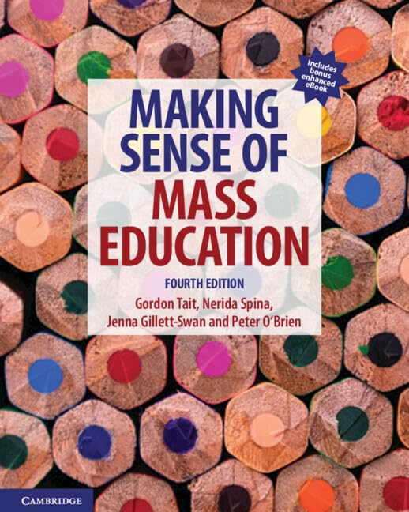

EDCX246 Exam Revision Guide: Society and Education
About the Textbook: Making Sense of Mass Education (4th Edition)

Publication & Publisher
Cambridge University Press (4th Edition, 2022)
Port Melbourne, VIC, Australia
Authorial Team (QUT)
Gordon Tait, Nerida Spina,
Jenna Gillett-Swan, Peter O'Brien
Dedication"For all the students who've ever laughed with (or at) us."
Primary Academic Disciplines
Sociology of Education, Critical Policy Studies,
Philosophy of Education, Children's Rights
Foundational Premise: Beyond "Tips and Tricks"
Making Sense of Mass Education is a foundational Australian initial teacher education
textbook designed to analyze the historical, political, and cultural forces shaping mass schooling.
Rather than treating schools as politically neutral instructional spaces, the text approaches
mass education as an active, contested social practice that organizes, classifies, and regulates
populations.
The authors directly acknowledge pre-service teachers' natural anxiety and desire for immediate,
practical classroom management "tips and tricks." While validating the stress of initial practice,
the text argues that reducing teacher education to mere technical execution is dangerous.
Without understanding the broader social machinery of schooling, teachers are left ill-equipped
to understand why specific policies fail, how everyday administrative routines produce
systemic disadvantage, or how institutional power functions inside the classroom.
The core thesis of the book is that much of what is accepted as "common sense" in schooling—such as
assumptions regarding innate academic ability, the neutrality of curricula, meritocracy, or linear
childhood development—consists of historically constructed orthodoxies. The Fourth Edition
updates this inquiry by examining modern Australian challenges: datafication (NAPLAN), market
competition, children's participatory rights (UNCRC), and the ongoing need to decolonize
Eurocentric institutions.
Authorial Backgrounds & Research Lineage
The authorial team brings complementary disciplinary perspectives from the Queensland
University of Technology (QUT). Gordon Tait specializes in the philosophy of education,
Foucauldian governance, and the sociology of youth; Nerida Spina brings classroom teaching
experience alongside research into accountability, datafication, and policy performativity;
Jenna Gillett-Swan focuses on inclusive education, child voice, and participatory rights; and
Peter O'Brien focuses on education policy, political sociology, and governance. This blend of
philosophical deconstruction and policy research shapes the book's critical orientation.
Core Methodology: The "Toolbox" Approach
In the introduction, the authors explicitly disavow grand meta-narratives. They reject both
functionalism (which views schools as neutral engines of social mobility) and traditional Marxist
determinism (which treats schooling purely as an economic reproduction machine). Instead, they
adopt a pragmatic sociological and philosophical toolbox approach: selecting specific theorists
(such as Bourdieu, Foucault, Connell, or Hall) where their concepts offer maximum diagnostic leverage
to unpack specific institutional challenges.
The Pedagogical Function of "The Myth"
Each chapter is organized around widely circulated popular "myths" drawn from political rhetoric,
media discourse, and staffroom common sense (e.g., meritocracy, digital natives, childhood innocence).
The authors do not present these myths as an empirical census of what all educators believe; rather,
they serve as deliberate pedagogical entry points designed to provoke pre-service teachers to interrogate
unexamined assumptions and uncover the structural realities of schooling.
Methodological Critique: The Epistemological Paradox of the "Empirical Myth"
A foundational contradiction exists between how the authors define a "myth" and how they construct
their arguments. On page 2, Tait et al. define a myth as "An idea or story that many people
believe, but which is demonstrably false under empirical analysis." This definition borrows the
rhetoric and epistemic authority of hard positivism to delegitimize opposing viewpoints.
Yet, across the text, the authors conduct virtually zero primary empirical research, and systematically
dismiss quantitative testing, psychometrics, and empirical evaluation as instruments of state
surveillance, the "psy-complex," and datafication. Instead, the authors redefine "empirical analysis"
as qualitative discourse analysis—treating ministerial speeches, media headlines, and policy
documents as empirical objects, and equating textual deconstruction with empirical disproof.
This creates an asymmetric standard of proof: when debunking conservative or
meritocratic "myths," the authors demand macro-statistical refutation (citing ABS wealth figures and
Gini coefficients). Conversely, when asserting their own preferred "realities" (such as schools operating
as Benthamite carceral Panopticons, ADHD as a social control fiction, or Philippe Ariès' discredited
medieval childhood thesis), they provide zero experimental evidence and rely purely on conceptual
assertion. The work functions not as an empirical study, but as critical political philosophy framed
in the language of empirical correction.
Structural Architecture: The Four Pillars
Part 1: The Pillars of Sociology
Chapters 1–4: Modern and postmodern sociologies of schooling covering Social Class,
Race/Ethnicity, Gender, and Sexualities.
Part 2: An Alternative Approach
Chapters 5–9: Education and governance, examining Disciplinary Power, Subjectivity,
Neoliberalism, Pre-Adulthood, and Datafication.
Part 3: Cultural Contexts
Chapters 10–13: Contemporary cultural forces shaping schools, including Media, Popular
Culture, Technology, and Globalisation.
Part 4: Philosophy & Education
Chapters 14–18: Foundations of practice, covering Philosophy, Ethics/Law, Children's Rights,
Truth/Postcolonialism, and Alternative Models.
Purpose & Scope for Pre-Service Teachers
The authors state explicitly that this book is not a practical "how-to" manual for lesson planning
or classroom behavior management. Rather, it is designed to cultivate critical professional reflexivity.
Its purpose is to equip educators with the analytical tools to understand why schooling operates
as it does, how power is mediated through routine administrative practices, and how to advocate for equity
within institutional structures.
The Social "Invention" of Childhood (Historiographically Discredited): Argued that medieval society lacked a concept of childhood, treating young people as "miniature adults" until modern industrial schooling segregated them into protected, age-batched dependencies.
Myth: 'Childhood' and 'youth' are immutable facts of nature.
Performativity, Audit Culture & Privatisation: Neoliberal accountability systems force teachers into "performativity"—aligning work with measurable data targets and public league tables at the expense of authentic pedagogical relationships.
Myth: League tables and audit metrics provide objective measures of school success.
Mythologies & "The Death of the Author": Deconstructed everyday popular culture as bourgeois ideology ("myths" masquerading as nature). Formulated "the death of the author," establishing that textual meaning is generated by the audience decoding intertextual codes rather than authorial intent.
Myth: Popular culture artifacts are natural and neutral. Myth: With news and media, audiences only need to read and listen.
The Architectural Panopticon: Circular institutional design featuring central inspection towers that induce in inmates the state of conscious and permanent visibility, laying the blueprint for modern school monitoring and behavioral surveillance.
Myth: School architecture is purely functional and unrelated to behavioral control.
Basil Bernstein, Prof. Sociology of Education (1967–90)
Credit: UCL
Restricted vs. Elaborated Codes: Curricula and examinations operate exclusively through the elaborated code (context-independent, universalistic), structurally penalizing working-class students accustomed to restricted codes (context-dependent, particularistic).
Myth: School language and assessment standards are culturally neutral.
Cultural Capital, Habitus & Symbolic Violence: Schools are not meritocratic; they inherently value middle-class linguistic fluency, dispositions, and tastes (cultural capital), treating inherited social advantage as innate academic ability while committing symbolic violence against working-class students.
Myth: Schooling success is only about individual ability. Myth: Social class is all about money.
Gender Performativity: Gender is not a stable biological reality or internal essence, but a stylized repetition of bodily acts and linguistic codes continually enforced through social surveillance and institutional sanction.
Myth: Gender is a biological fact, and schools should teach accordingly.
Moral Panics & Folk Devils: Media outlets manufacture exaggerated societal anxieties around youth deviance or falling school standards, creating "folk devils" to justify regulatory crackdowns and increased surveillance of teachers.
Myth: Media reports on education reflect objective public consensus.
Hegemonic Masculinity & Competitive Academic Curriculum: Dominant masculine archetypes subordinate women and non-conforming men through peer policing in schools. Connell also identified the Competitive Academic Curriculum (CAC), which structurally generates working-class failure to protect credential scarcity.
Myth: Boys are the real victims of the schooling system. Myth: Gender is an immutable biological binary.
The Medicalisation of Deviance: Non-compliant, active, or disaffected school behaviors are transformed into medical and psychiatric disorders (e.g., ADHD), deflecting critique away from rigid school structures onto student neurochemistry.
Myth: Behavioral non-compliance is always an individual neurochemical pathology.
Pragmatism & Democratic Schooling: Schools are embryonic democratic communities; learning is not the passive absorption of static facts, but active inquiry, problem-solving, and reflective experience ("learning by doing").
Myth: Philosophy is an abstract, useless luxury for classroom teachers.
Colonisation of the Mind: Colonial educational apparatuses inflict profound psychological alienation, socialising colonised youth to internalise their presumed inferiority and severing them from native languages, cosmologies, and dignity.
Myth: Educational outcomes are unaffected by race. Myth: Assimilationist schooling is benevolent.
Semiotic Democracy & Textual Poaching: Popular culture is an active battleground where ordinary youth repurpose, subvert, and resist commercial capitalist texts, constructing their own subcultural meanings and identities.
Myth: Popular culture is mindless rubbish without educational merit.
Governmentality, Disciplinary Power & Regimes of Truth: Modern power operates "at a distance." Cellular seating, timetables, and exams instill internal self-discipline, causing students to internalize surveillance and become docile, self-governing subjects.
Myth: Schools are primarily about education, not regulation. Myth: The structure of the school isn't important.
The "Banking" Concept vs. Conscientisation: Traditional schooling treats students as empty accounts into which teachers deposit static knowledge. Critical pedagogy demands dialogical, problem-posing education that empowers learners to transform their world (praxis).
Myth: Teaching is a politically neutral act of knowledge transmission.
Educational Vouchers & School Choice: Proposed funding students directly via educational vouchers rather than funding public school institutions. Compelling schools to compete for enrollments in a commercial marketplace forces institutional efficiency, accountability, and parental choice.
Myth: Market competition naturally raises educational quality for all students. Myth: School choice is inherently equitable.
Institutional Racism & Whiteness as Policy: Racism in education is not just individual bigotry; it is an institutionalized policy architecture where tracking, discipline policies, and assessment regimes maintain white racial dominance as an unexamined baseline.
Myth: We no longer discriminate on the basis of race or ethnicity. Myth: There is an 'Indigenous problem' in education.
Encoding/Decoding & Active Audience Theory: Media texts are polysemic; viewers do not passively absorb ideological messages (hypodermic model) but actively decode them via dominant-hegemonic, negotiated, or oppositional positions.
Myth: With the news media, you don't need to think, you just read and listen.
Spontaneous Order & Critique of Central Planning: Knowledge in society is dispersed and decentralized; state-planned educational systems are inherently coercive and inefficient. Market competition functions as a discovery mechanism superior to state bureaucratic monopolies.
Myth: Centralized state planning is the only rational way to organize mass education.
Childhood Identities & Active Agency: Pioneered ethnographic research centering children's everyday lived cultures. Refutes biological reductionism by demonstrating that children are active social agents who construct distinct cultural worlds, negotiate identities, and shape the adult structures around them.
Myth: 'Childhood' and 'youth' are immutable facts of nature. Myth: Children are passive recipients of adult socialization.
Codification of Children's Rights: Drafted the foundational charter that established children as universal rights-bearers rather than parental chattel or objects of welfare, leading directly to the 1989 UNCRC.
Myth: Rights are granted conditionally only upon reaching adulthood.
Intertextuality & The Mosaic of Citations: Coined the term intertextuality (1966), establishing that no text exists as an isolated island; every cultural artifact is a "mosaic of citations," continually absorbing and transforming pre-existing discourses.
Myth: Classical high culture is the solitary repository of sophisticated textual meaning. Myth: Media texts have fixed, singular authorial meanings.
Governance by Numbers & Datafication: National standardized assessments (NAPLAN) function as instruments of remote surveillance and political steering, creating high-stakes washback, test gaming, and curriculum narrowing.
Myth: Standardized assessment provides an unmediated, objective picture of school learning.
Economic Reproduction & Class Stratification: Class is an exploitative relation to the means of production. Mass education functions as an ideological apparatus that reproduces the capitalist division of labor, conditioning working-class youth for compliant wage labor while grooming elites for management.
Myth: Australia is an egalitarian society characterised by equality. Myth: Schools provide equal opportunity for all.
Prepared Environment & Self-Directed Learning: Multi-age classrooms and didactic sensory materials foster intrinsic motivation and self-regulation, demonstrating that young children naturally seek focused learning when freed from arbitrary teacher control.
Myth: Traditional rote teacher-centered instruction is the solitary viable educational model.
Curriculum Specialization & Epistemic Boundaries: Analyzes the specialization of academic knowledge structures. Argues that conceptual coherence and boundary maintenance between everyday common sense and academic disciplines are prerequisites for educational equality.
Myth: School subjects should dissolve disciplinary boundaries into generic competencies. Myth: Epistemic standards have no universal validity.
The Cultural Interface: The complex, contested space where Indigenous ancestral traditions and oral ways of knowing intersect with Western disciplinary systems. Equips First Nations students to deploy Western analytical tools without sacrificing cultural sovereignty.
Myth: School curriculum is culturally neutral and universally true. Myth: 'Closing the Gap' deficit models are objective.
Democratic Self-Governance & Freedom: Founded Summerhill; proved that schooling thrives on voluntary attendance, radical equality between children and adults, and community meetings where each member has an equal vote.
Myth: Compulsory coercion and age-batching are necessary for intellectual development.
Relational Ethics of Care: Morality in education is founded upon authentic relationships, attentiveness, and responsiveness to the cared-for, rather than abstract, defensive rule-compliance or bureaucratic legalism.
Myth: Complying with legal statutory mandates encompasses a teacher's full moral duty.
Social Model of Disability & Assistive Tech: Disability is not an individual biological defect, but the result of social barriers. Assistive technologies (screen readers, speech-to-text) remove structural barriers, providing Universal Design for Learning (UDL).
Myth: Learning difficulties reside entirely within the individual student.
The Faustian Bargain of Technology: Technological change is never additive; it is ecological and non-neutral. Every innovation exacts a social and cognitive cost ("technology giveth and technology taketh away").
Myth: Technologies are neutral tools that simply accelerate learning.
Marc Prensky (Critiqued)
Technological Determinism
The "Digital Native" Fallacy: The flawed assumption that children innately possess critical information literacy and computational proficiency simply because they were born into an environment filled with consumer touchscreens.
Myth: Digital technology is the answer to all educational problems. Myth: Technology signals the end of teaching.
The "Human Becoming" Critique & Childhood Structure: Co-formulated the New Sociology of Childhood paradigm; critiques developmental models that frame youth merely as deficient "human becomings" awaiting adulthood, establishing childhood as a permanent structural and political category in society.
Myth: Children lack agency and social competence. Myth: The categories of childhood and youth have nothing to do with governance.
Compulsory Heterosexuality: Heterosexuality operates as a pervasive regulatory institution rather than an innate preference, sustained in schools through curricular omissions, administrative defaults, and the erasure of LGBTQ+ experiences.
Myth: School silences around sexuality represent neutral, objective boundaries.
Global Neoliberal Imaginaries & Policy Mobilities: Analyzes how transnational policy flows and global social imaginaries reshape national schooling, subordinating local democratic and cultural aspirations to global market competitiveness and human capital metrics.
Myth: National curriculum policy operates as a sovereign, isolated enterprise. Myth: Global education policy is culturally neutral.
The "Psy-Complex" & Governing the Soul: Psychological and psychiatric vocabularies reframe institutional, environmental, and curricular frictions as individual internal psychological deficits, producing subjects who regulate their own souls.
Myth: Subjectivity, personality, and intelligence are purely innate qualities.
Epistemic Violence: The systematic silencing, delegitimation, and destruction of non-Western knowledge traditions by imposing a Eurocentric curriculum as universal objective reality.
Myth: Western canon represents the summit of human truth.
Class, Status & Party (Social Closure): Stratification operates across economic market position (class), social prestige and lifestyle honor (status), and political power (party). Elite schools maintain social closure by trading in cultural prestige and status credentials.
Myth: Social class is all about money. Myth: School status reflects only academic performance.
Counter-School Resistance (Learning to Labour): Working-class youth actively develop counter-school cultures celebrating manual labor and rejecting scholastic authority; their defiance sees through meritocratic myths but paradoxically seals their own working-class reproduction.
Myth: Working-class underachievement stems from personal lack of ambition.
Settler Colonialism as a Structure: Settler colonialism is not a historical event, but an ongoing institutional structure driven by the logic of elimination. Mission and state schooling functioned as assimilatory infrastructure.
Myth: Australia was legally or epistemically terra nullius.
Powerful Knowledge vs. Knowledge of the Powerful: Distinguishes who controls curriculum (knowledge of the powerful) from specialized, discipline-based conceptual knowledge (powerful knowledge). Denying disadvantaged students access to disciplinary canons under the guise of relativism deprives them of intellectual mobility.
Myth: Scientific empiricism and objective truth are inherently oppressive colonial constructs. Myth: All school curriculum is merely arbitrary cultural power.
Surveillance Capitalism & Behavioral Modification: Commercial digital platforms extract student behavioral surplus, using algorithmic feedback loops to engineer attention retention, privatizing public educational data for corporate profit.
Myth: Edtech platforms exist solely for educational benefit.
Myths and Sociological Conclusions
Topic
The Myth (The Exam Trap)
Sociological Conclusion (The Reality)
Judgement on "Reality" (Critical Appraisal)
1. Social Class
Australia is a society characterised by equality.
Australia has significant wealth and educational inequality heavily influenced by socio-economic class structures.
Accurate & Essential: Robustly backed by ABS and Gini data; decisively refutes the meritocratic myth, though risks minimizing real avenues for upward mobility.
Schooling success is only about individual ability.
Success is deeply tied to inherited cultural capital and the institutional reproduction of advantage.
Valid but Over-Deterministic: Bourdieu's cultural capital exposes institutional class favoritism, but risks structural fatalism by erasing student agency and explicit teaching effects.
Social class is all about money.
Class encompasses cultural dispositions, social networks, and internalized bodily practices (habitus).
Theoretically Insightful: Habitus correctly broadens class beyond income; however, treats standard academic English as purely arbitrary power rather than a functional analytical tool.
2. Race & Ethnicity
Humanity is naturally divided into races.
Race is an ideological and social construct invented to justify colonial domination, not a biological fact.
Scientifically Irrefutable: Fully supported by evolutionary genetics; biological race is an ideological fiction engineered to rationalize imperial exploitation.
We no longer discriminate on the basis of race or ethnicity.
Institutional and systemic racism remains embedded in curriculum, discipline policies, and school structures.
Contextually True, Overgeneralized: Validates systemic institutional barriers, but treats non-Anglo cohorts as a monolithic victim group, ignoring high-achieving migrant cohorts.
Educational outcomes are unaffected by race or ethnicity.
Systemic inequities directly and negatively impact minority and Indigenous student engagement and retention.
Empirically Grounded: Disproportionate exclusions and lower retention are factual realities, though geographic isolation and regional infrastructure deficits compound the disparity.
There is an 'Indigenous problem' in education.
The defect lies within the colonial structures of the schooling system itself, not within Indigenous students.
Essential Reframing: Dismantles paternalistic deficit discourses; however, discursive decolonization must be matched with material resources, healthcare, and attendance infrastructure.
3. Gender
Gender is a biological fact, and schools should provide education for girls and boys accordingly.
Gender is fluid and socially constructed; rigid binary education limits student potential and reproduces sexism.
Overreaches Constructivism: Useful for challenging restrictive stereotyping, but dismisses validated neurodevelopmental and cognitive research regarding sex differences in maturation.
Schools are passive spectators to the fact that measures of gender inequality are decreasing.
Schools actively reinforce and reproduce dominant gender norms through language, sport, and behavioral policing.
Accurate Institutional Analysis: Effectively identifies how informal school rituals, staff expectations, and sporting subcultures enforce normative behaviors.
Boys are the real victims of the schooling system.
While hegemonic masculinity pressures boys, girls and gender-diverse students face ongoing systemic structural inequality.
Ideologically Bifurcated: Connell's framework is sharp, but labeling boys' literacy collapse and dropout rates as a mere 'moral panic' minimizes an observable crisis in male education.
5. Governance
Society has always been simply a collection of individuals.
Individuality is a modern administrative construct created through categorization, surveillance, and testing systems.
Persuasive Genealogy: Foucault's insight shows that modern 'individuality' is largely a product of institutional tracking, classification, and psychological profiling.
Schools are primarily about education, not regulation.
Mass schooling originated as an apparatus of the state designed to manage populations and enforce social order.
Insightful but Paranoiac: Demystifies the benign myth of the school, but conflating basic organizational coordination with carceral state control is rhetorically hyperbolic.
The structure of the school isn't really that important to the education process.
The physical and temporal architecture of schools enforces surveillance, docility, and internal self-discipline.
High Diagnostic Value: Timetables and cellular classrooms do condition bodies; however, structured routines remain practical prerequisites for child safety and focused collective study.
8. Pre-Adulthood
'Childhood' and 'youth' are facts of nature.
They are modern sociological categories created to define, isolate, and administratively process young people.
Flawed Historiography: Leans on Philippe Ariès' discredited medieval thesis, though correctly observes that mass schooling institutionalized and prolonged legal dependency.
The categories of childhood and youth have nothing to do with governance.
Age-segregation allows institutions to establish developmental norms, identify anomalies, and enforce conformity.
Valid Bureaucratic Critique: Age-batching does act as an administrative assembly line, but developmental cognitive milestones remain biologically grounded.
10. The Media
We do not need pointless subjects such as media studies in our already crowded curriculum.
Critical media literacy is essential because mass communication platforms construct reality and reinforce political power.
Pragmatic & Timely: Absolutely vital in an era of digital algorithmic feeds, synthetic media, and corporate political framing.
With the news media, you don't need to think, you just need to read and listen.
Audiences actively decode media narratives; reporting is an engineered representation rather than objective reality.
Asymmetric Logic: Authors champion Hall's active audience theory for students, yet treat the adult public and policymakers as helpless, duped victims of media manipulation.
The media doesn't create moral panics, but even if they do, this doesn't affect education.
Media-generated moral panics distort policy priorities, induce curriculum purges, and intensify scrutiny on teachers.
Empirically Accurate: Sensationalized media reporting on 'falling standards' or 'failing teachers' repeatedly triggers reactive, top-down bureaucratic interventions.
11. Popular Culture
Popular culture is rubbish – in terms of taste, it's awful, and in terms of educational value, it's irrelevant.
Popular culture is a critical site of student meaning-making, identity formation, and layered cultural communication.
Valid Anti-Elitist Turn: Legitimizes student lived reality; however, commercial algorithmic entertainment is engineered for dopamine capture rather than sustained critical reflection.
Teachers need to be up to date with student cultures.
Teachers do not need to consume youth trends, but they must validate student lived culture and teach critical analysis.
Sensible & Grounded: Correctly relieves educators of superficial trend-chasing while asserting the professional duty to engage student cultural backgrounds.
Popular culture has no place in the classroom.
Integrating popular culture bridges out-of-school experiences with rigorous academic interrogation of power.
Pedagogically Sound: Popular texts provide accessible entry points for semiotic deconstruction, though must not displace high-status canonical literacy.
12. Technology
Technologies aren't that important; they don't affect the fundamentals of what it is to be human.
Digital technology profoundly reconfigures human relationships, social practices, and epistemological authority.
Unquestionably True: Computational networks and AI fundamentally reshape how information is created, stored, and verified.
Digital technology is the answer to all our education problems.
Uncritical technology rollouts prioritize administrative gadgetry over pedagogy while reinforcing digital inequities.
Teachers are more vital than ever to guide students in critically evaluating biased, contested online information.
Vital Reaffirmation: Rightly champions the educator as an essential mediator, though the chapter's overall tone leans overly technophobic regarding assistive and adaptive tools.
Definitions Dictionary by Chapter
Chapter
Term
Sociological Definition
Chapter 1: Social Class
Myth
An idea or story that many people believe, but which is demonstrably false under empirical analysis.
Socioeconomic status (SES)
A statistical measure of relative standing in society based on income, educational attainment, and occupational prestige.
Sociological imagination
C. Wright Mills' concept describing the capacity to connect personal troubles with broader public, structural issues.
Cultural capital
Pierre Bourdieu's term for non-financial social assets (language codes, tastes, manners) that enable social mobility.
Habitus
Bourdieu's concept of deeply ingrained, subconscious dispositions and habits acquired through one's social class position.
Social reproduction
The structural processes through which existing social inequalities are transmitted from one generation to the next.
Meritocracy
A system wherein rewards and advancement are believed to be distributed purely according to individual talent and effort.
Chapter 2: Race, Ethnicity and Indigeneity
Race
A social construct categorizing human populations based on physical traits, historically used to justify domination.
Ethnicity
A social category grouping individuals according to shared cultural heritage, ancestry, language, or traditions.
Indigeneity
The state of originating naturally from a specific geographic land, retaining primordial sovereignty and cultural continuity.
Racism
Prejudice and institutionalized power operating to disadvantage groups perceived as racially or ethnically inferior.
Eugenics
The pseudoscientific practice of engineering human reproduction to breed desired traits, weaponized in colonial schooling.
Whiteness
An unexamined institutional baseline that positions white Eurocentric culture as the universal, objective standard.
Chapter 3: Gender
Gender
The socially constructed roles, behaviors, and expectations attributed to individuals on the basis of perceived sex.
Sex
Biological categorizations based on chromosomal, hormonal, and anatomical characteristics.
Hegemonic masculinity
R.W. Connell's concept of culturally dominant masculine behaviors that maintain male dominance and subordinate femininity.
Chapter 4: Sexualities
Sexuality
An individual's emotional, romantic, and sexual attraction and identity within societal relational frameworks.
Chapter 5: Governance
Governance
The coordinated actions, policies, and mechanisms through which populations and institutions are directed and regulated.
Governmentality
Michel Foucault's term for modern techniques that guide individual conduct so citizens willingly govern their own behavior.
Panopticon
An architectural model of circular prison surveillance where constant unverifiable observation induces self-policing.
Sovereign power
Top-down, coercive power historically exercised through direct physical force and absolute public authority.
Disciplinary power
Diffuse power operating through subtle administrative schedules, classification, surveillance, and normalization.
Chapter 6: Subjectivity
Subjectivity
An individual's conscious internal sense of self, agency, and worldview, produced through social and institutional discourses.
Pathologise
The practice of defining normal social, behavioral, or cultural differences as psychological or medical disorders.
Chapter 7: Neoliberalism
Neoliberalism
An ideological framework prioritizing free-market competition, deregulation, privatization, and consumer choice in schooling.
Chapter 8: Pre-Adulthood
Pre-adulthood
The historically constructed developmental transitional phase between infancy and legal, economic adulthood.
Developmentalism
The psychological doctrine positing universal, linear biological stages that schools utilize to batch students by chronological age.
Chapter 9: Datafication
Datafication
The systematic quantification of pedagogical processes, human performance, and school qualities into digital metrics.
Chapter 10: The Media
Media
The institutionalized collective channels of mass communication (print, broadcast, and interactive digital networks).
Active audience
A media theory asserting that recipients actively construct individual meaning through negotiation rather than passive absorption (Hall, 1980).
Moral panic
A collective societal anxiety engineered by sensationalized media coverage targeting a perceived threat to social order.
Chapter 11: Popular Culture
Popular culture
The commercialized cultural expressions, arts, and consumer practices widely engaged with by non-elite populations.
High culture
Cultural artifacts historically venerated by socio-political elites and granted privileged status in school curricula.
Polysemy
The structural property of cultural texts to contain multiple, diverse, and often contradictory interpretive meanings.
Chapter 12: Technology
Technology
The application of scientific and computational apparatuses within organized institutional and social practices.
Technological determinism
The reductive assumption that technical machinery autonomously drives historical, educational, and social change.
Digital natives
A disputed label presuming that generations born into digital environments possess instinctive technological proficiency.
Chapter 13: Globalisation
Globalisation
The worldwide integration of economic, financial, cultural, and political policies eroding nation-state autonomy.
Chapter 14: Philosophy
Philosophy
The critical investigation into foundational questions of knowledge (epistemology), reality (ontology), and values (ethics).
Chapter 15: Ethics and Law
Ethics
Moral frameworks guiding professional human action, exceeding statutory legal compliance to demand genuine justice and care.
Chapter 16: Children's Rights
Children's rights
Inalienable, legally codified protections granting youth both protective entitlements and participatory self-determination.
Chapter 17: Postcolonialism
Postcolonialism
The academic and political deconstruction of imperial epistemologies and their ongoing structural legacies in schooling.
Chapter 18: Alternative Ed
Alternative education
Pedagogical approaches diverging from state-mandated mass education to center democratic governance and learner autonomy.
Chapter Summaries (Three-Paragraph Analysis)
Chapter 1: Social Class
Mass education is culturally legitimated by the pervasive national myth of the Australian "fair go" and the doctrine of educational meritocracy. In Chapter 1, Tait et al. dismantle the premise that schooling functions as an egalitarian level playing field where academic and economic outcomes reflect individual talent, effort, and ambition. Instead, the authors demonstrate that meritocracy functions as an ideology of legitimation: by framing educational success as the natural result of individual merit, the institution pathologizes working-class failure as personal intellectual or moral deficiency. This individualizing deficit discourse conceals the structural reality that socio-economic status remains the single most reliable predictor of educational achievement, school completion rates, and university matriculation across Australia.
To deconstruct the multidimensional nature of social stratification, the chapter contrasts classical Marxian and Weberian frameworks. Where a vulgar economic analysis reduces class solely to income brackets or market consumption, Karl Marx demonstrates that class represents an exploitative social relation grounded in the ownership of capital. Within this tradition, schooling functions as an ideological apparatus designed to reproduce the capitalist division of labor, conditioning working-class students for routine compliance while preparing elite students for management and governance. Max Weber enriches this analysis by showing that social stratification operates across three distinct yet intersecting axes: class (economic position in the marketplace), status (social prestige, honor, and cultural lifestyle), and party (organizational and political power). Weberian sociology explains why cultural and occupational prestige often stratify school communities even when income levels appear comparable.
The structural mechanics of educational inequality are brought into sharp relief through Pierre Bourdieu's sociology of cultural reproduction. Bourdieu demonstrates that schools are neither culturally neutral nor objectively meritocratic; rather, they demand a specific cultural capital (embodied linguistic fluency, objectified cultural assets, and institutional credentials) that middle- and upper-class children acquire naturally through their family habitus. When working-class students enter schooling, their communicative and cultural styles are delegitimized through institutional symbolic violence—the arbitrary elevation of the ruling class's culture to the status of universal merit, while penalizing working-class culture as deficient. The school system thus converts inherited social privilege into recognized academic achievement, laundering social reproduction through the illusion of objective grading.
The reproduction of class is further reinforced through curriculum design and sociolinguistic sorting. Drawing on R.W. Connell's landmark Australian research, the chapter exposes how the Competitive Academic Curriculum (CAC) is hierarchically organized around abstract, competitive assessment that structurally produces large-scale failure among working-class students to protect the scarcity value of university entrance credentials. Concurrently, Basil Bernstein’s sociolinguistic theory illustrates that schools conduct instruction and assessment exclusively through an "elaborated code" (universalistic, explicit, and context-independent), systematically penalizing children raised in environments reliant on "restricted codes" (particularistic, context-dependent meanings). When working-class youth recognize that academic success requires abandoning their cultural identity, many forge the counter-school resistance documented by Paul Willis—actively rejecting scholastic authority and celebrating manual labor, an act of defiance that paradoxically seals their own working-class reproduction.
For practicing educators, Chapter 1 exposes how macro-level funding policies directly shape classroom reality. Australia's schooling system remains deeply segregated along class lines: federal and state funding architectures disproportionately subsidize elite independent and religious schools, driving socio-economic residualisation in under-resourced public comprehensives. The pedagogical challenge for teachers is to reject cultural deficit theories that blame disadvantaged families for lacking "aspiration." Transformative pedagogy requires acknowledging the cultural wealth and resilience of working-class communities, actively teaching the implicit rules and elaborated codes of the curriculum, and defending public education as a collective democratic entitlement rather than a privatized consumer good.
Strengths of the Argument
Operating within the authors' stated 'toolbox' approach, this chapter avoids crude Marxist economic determinism by deploying Bourdieu's concepts of cultural capital and habitus. Its analytical strength is demonstrating how schools, despite meritocratic rhetoric, systematically validate middle-class linguistic codes and dispositions, thereby converting inherited social advantage into certified academic success.
Inaccuracies & Critical Counter-Arguments
Despite the authors' introductory promise to avoid grand determinism, the chapter's execution slips into structural fatalism. By portraying habitus as an inescapable reproduction loop, it downplays documented rates of upward social mobility and individual student resilience. Furthermore, treating academic language proficiency purely as arbitrary middle-class cultural capital dismisses the objective cognitive utility of precise analytical language in technical and scientific disciplines.
Balanced Judgement of the Material
Verdict: Powerful diagnostic framework, but prone to structural fatalism. Assessed against the authors' stated aim to provide diagnostic tools, Bourdieu's framework brilliantly exposes how schools convert class privilege into certified merit. However, the chapter's rhetorical execution lacks balance by treating class habitus as an inescapable destiny, ignoring how explicit, systematic instruction can empower working-class students to acquire high-status academic capital without abandoning their identities.
Analytical & Pedagogical Conclusion
Teachers must hold both insights simultaneously: acknowledge that the school system is structurally biased toward middle-class cultural capital, while refusing to treat habitus as an inescapable fate. The professional mandate is to provide explicit, high-expectations instruction that demystifies academic codes, ensuring working-class students acquire the powerful knowledge needed for upward mobility.
Chapter 2: Race, Ethnicity and Indigeneity
Mass education remains deeply entangled with the persistent popular orthodoxy that humanity is naturally partitioned into distinct, biologically determined racial categories. In Chapter 2, Tait et al. dismantle this foundational myth, demonstrating that biological race is an ideological fiction invented to rationalize European imperial expansion, violent dispossession, and systemic racial capitalism. Far from being grounded in human genetics, racial taxonomies were historically manufactured to naturalize colonial domination by equating physical variations with immutable intellectual, moral, and cultural hierarchies. Educational apparatuses historically played a central role in legitimating this hierarchy through pseudoscientific doctrines such as nineteenth- and twentieth-century eugenics, social Darwinism, and early intelligence testing, which weaponized biological determinism to justify segregated, low-tier schooling and classify non-Anglo children as inherently uneducable.
The psychological and cultural violence of this racial architecture is brought into focus through Frantz Fanon's postcolonial sociology. Drawing on Black Skin, White Masks, the chapter reveals how assimilationist schooling functions as an apparatus of psychological domination that engineers the colonisation of the mind. Colonial education systematically divorces colonized and minority youth from their native languages, ancestral histories, and community epistemologies, compelling them to measure their human worth against the colonizer's linguistic and cultural standards. By institutionalizing an educational environment where European culture represents the solitary summit of human civilization, schooling conditions racialized students to internalize their own presumed inferiority, inflicting a profound epistemic and psychological alienation that severs young people from their cultural dignity.
To understand how systemic inequities endure in contemporary educational settings without overt biological doctrines, the chapter deploys David Gillborn's Critical Race Theory framework. Gillborn demonstrates that racism in education is not reducible to isolated acts of individual racial hatred; rather, it is an institutionalized policy architecture wherein whiteness functions as an invisible, self-sustaining normative standard. Schooling systems maintain white racial dominance through mundane administrative routines, including subjective behavioral tracking, disproportionate disciplinary exclusions, and standardized assessment rubrics that masquerade as meritocratic while reflecting dominant cultural norms. Under this lens, educational policy does not accidentally fail minority students; rather, policy configurations systematically protect the interests and privileges of the dominant white cohort under the rhetoric of universal standards.
This institutional critique provides the foundation for dismantling the pervasive discourse of the "Indigenous problem" in Australian education. Tait et al. invert this long-standing deficit framing, establishing that the defect lies within the colonial structures and monocultural biases of the school system itself rather than within First Nations students, families, or communities. Mainstream policy frameworks such as "Closing the Gap" repeatedly pathologize Aboriginal and Torres Strait Islander learners by defining them exclusively through statistical absences—lagging literacy scores, attendance rates, and behavioral citations—while deflecting scrutiny away from chronic underfunding, remote infrastructure deficits, and culturally alienating syllabi. Treating Indigenous identity as an educational liability erases tens of thousands of years of sophisticated oral pedagogies, ecological expertise, and kinship systems, laundering systemic discrimination through paternalistic remediation.
For practicing educators, Chapter 2 establishes that achieving racial equity requires moving far beyond superficial, tokenistic "add-and-stir" multicultural celebrations or one-off cultural performances. Culturally sustaining pedagogy demands that teachers critically interrogate their own racial assumptions, reject deficit thinking, and actively center Indigenous and minority knowledge systems as rigorous, sovereign intellectual traditions. In the classroom, this necessitates eliminating racially biased disciplinary practices that feed the school-to-prison pipeline, offering high-expectations academic instruction, and embedding community Elders and local cultural authorities directly into the curriculum. Transforming schooling into an equitable democratic practice requires recognizing that educational justice cannot be achieved until the ongoing structural legacies of colonial education are dismantled.
Strengths of the Argument
In alignment with the book's commitment to deconstruct deficit discourses, the authors effectively invert the 'Indigenous problem' narrative. The argument's primary strength is exposing race as a historical-political construct of colonial governance, demonstrating that systemic disparities stem from colonial institutional architectures and unexamined norms of 'whiteness' rather than student deficits.
Inaccuracies & Critical Counter-Arguments
While successfully deconstructing biological race, the chapter's conceptual framework drifts into an overgeneralized victimology. It fails to account for the outstanding academic outcomes achieved by non-Anglo migrant cohorts within the exact same institutional structures. Moreover, by framing all institutional standards as 'whiteness,' it risks conflating necessary literacy and behavioral standards with systemic racial oppression.
Balanced Judgement of the Material
Verdict: Essential institutional critique, weakened by overgeneralized framing. The authors succeed in reframing educational disadvantage as an institutional consequence of colonial structures. The chapter overreaches, however, by reducing all non-Anglo student experiences to a uniform deficit narrative, neglecting both the success of various migrant demographics and the immediate material interventions (infrastructure, health, attendance) required alongside curricular decolonization.
Analytical & Pedagogical Conclusion
Meaningful educational reform requires unmasking institutional racism and embedding Indigenous perspectives across the curriculum. However, educators must pair cultural responsiveness with rigorous direct support, recognizing that closing the gap demands addressing material socioeconomic deficits alongside curricular decolonization.
Chapter 3: Gender
Mass education remains deeply structured by the persistent popular orthodoxy that gender is a binary, immutable biological imperative. In Chapter 3, Tait et al. dismantle this foundational assumption, distinguishing clearly between biological sex (anatomical, hormonal, and chromosomal configurations) and socially constructed gender (the culturally contingent roles, behaviors, and expectations attributed to individuals on the basis of perceived sex). The authors challenge pervasive neuro-essentialist myths alleging that boys and girls possess fundamentally distinct cognitive wiring that requires separate learning styles. Drawing on contemporary cognitive neuroscience, the text emphasizes brain neuroplasticity: cognitive and behavioral capacities develop through dynamic cultural interactions, socialization, and schooling experiences rather than predetermined biological destinies.
The institutional mechanics through which schools police and reproduce gender hierarchies are unpacked through R.W. Connell's sociology of gender. Connell demonstrates that masculinity is not a singular, natural trait, but an internally stratified hierarchy of social practices. Within schools, hegemonic masculinity—the culturally exalted archetype emphasizing physical dominance, aggressive competitiveness, emotional detachment, and compulsory heterosexuality—operates as a dominant regulatory ideal. Through organized competitive sports, informal peer surveillance, playground spatial dominance, and staffroom banter, boys who embody hegemonic norms subordinate not only girls and women, but also marginalized, complicit, and subordinate masculinities (such as academically oriented, quiet, or gender-non-conforming boys), exacting heavy psychological penalties for non-compliance.
This structural analysis is reinforced by Judith Butler's poststructuralist theory of gender performativity. Butler argues that gender is neither an innate biological reality nor an internal psychological core waiting to be expressed; rather, it is a stylized repetition of bodily acts, gestures, and linguistic codes continually enacted within prevailing social conventions. Schools function as institutional performative crucibles: routine organizational practices—such as sex-segregated lines, gendered school uniforms, binary roll-call records, and differential behavioral expectations—compel students to continually rehearse and cite rigid binary roles under the constant gaze of teachers and peers. Recognizing gender as performative reveals that normative gender identities are fragile social constructs that can be contested, disrupted, and renegotiated within classroom spaces.
These theoretical frameworks allow Tait et al. to deconstruct the contemporary political and media panic surrounding "failing boys." The authors argue that framing boys as the primary "victims" of schooling represents a classic moral panic that weaponizes genuine educational disengagement to allege that school systems have become excessively "feminized." While working-class, regional, and First Nations boys undeniably face acute challenges in literacy attainment, school retention, and exclusionary disciplinary penalties, reducing these outcomes to a simplistic battle of the sexes obscures the powerful intersections of social class and race. Furthermore, depicting boys as the primary victims of schooling erases the ongoing structural reality that men retain dominant economic, political, and institutional power as adults, while girls continue to face gendered pay gaps, workforce discrimination, sexual harassment, and gender-based violence.
For classroom practitioners, Chapter 3 establishes that achieving gender equity requires moving beyond superficial neutrality toward active, reflexive pedagogy. Teachers must critically examine their own unconscious assumptions, eliminating gender-biased language, avoiding gender-segregated classroom grouping, and challenging gendered stereotyping in subject-selection advice (such as discouraging girls from advanced STEM tracks or dissuading boys from the arts and humanities). Pedagogically, educators must reject pseudo-scientific calls for gender-segregated instructional models that claim boys need "active, competitive" instruction while girls require "quiet, collaborative" tasks, which only hardens restrictive archetypes. Instead, teachers must cultivate inclusive classroom environments that affirm gender diversity, support gender-diverse students, and create space for youth to explore their full human potential free from patriarchal policing.
Strengths of the Argument
The chapter's theoretical value lies in its nuanced application of R.W. Connell's hegemonic masculinity, treating gender as a fluid, socially policed practice rather than a biological binary. It successfully illustrates how school subcultures and institutional rituals pressure boys into emotional suppression, while contextualizing the 'failing boys' discourse without erasing broader structural inequalities faced by women.
Inaccuracies & Critical Counter-Arguments
The chapter's commitment to social constructivism causes it to dismiss biological and neurodevelopmental research concerning sex differences in maturation and executive function. Additionally, labeling the documented underperformance of working-class boys in literacy, retention, and exclusion rates as a mere 'moral panic' minimizes an observable educational crisis for the sake of ideological consistency.
Balanced Judgement of the Material
Verdict: Sophisticated sociology of masculinity, compromised by biological denial. Connell's hegemonic masculinity provides teachers with a valuable lens to deconstruct harmful peer policing and behavioral expectations. Yet, by dismissing acute male underperformance in literacy and school retention as a mere 'moral panic,' the text sacrifices empirical reality for ideological coherence, missing an opportunity to address boys' specific developmental needs.
Analytical & Pedagogical Conclusion
Classrooms must actively disrupt rigid gender binaries and hegemonic masculinity without ignoring observable male underperformance. Teachers must dismantle patriarchal stereotypes while deploying targeted, early literacy and behavioral supports designed to engage at-risk boys.
Chapter 4: Sexualities
Mass education operates under the pervasive institutional assumption that heterosexuality represents the natural, universal, and self-evident default of human existence. In Chapter 4, Tait et al. interrogate this regulatory orthodoxy, known as heteronormativity, demonstrating that schools are not neutral moral sanctuaries, but active socializing apparatuses that construct and police sexual boundaries. By establishing heterosexuality as an unexamined baseline, schooling casts diverse sexual orientations and gender identities as anomalous, deviant, or invisible. The authors debunk the common staffroom myth that institutional silences around sexuality reflect objective professional boundaries; rather, these silences constitute an active hidden curriculum that systematically validates heterosexual relationships while pathologizing non-heterosexual lives.
The structural mechanics of this normalization are illuminated through Adrienne Rich's foundational critique of compulsory heterosexuality. Rich demonstrates that heterosexuality is not merely an innate biological preference, but a coercive political institution that is continuously enforced, incentivized, and protected by society's major regulatory structures. Within schools, compulsory heterosexuality is reproduced through formal curricula that erase queer histories, pastoral programs that assume universal heterosexual development, administrative enrollment systems configured around rigid mother-and-father binaries, and informal school rituals such as gender-segregated dances and sporting subcultures. By treating heterosexual romance as an inevitable social destiny, schools compel compliance and exact social penalties from students who diverge from the institutional script.
A central analytical contribution of the chapter is the vital necessity of decoupling three concepts that mass education frequently collapses into a single binary package: biological sex, gender identity, and sexual orientation. While conservative educational discourse treats chromosomes, gonads, gender roles, and erotic attraction as an inseparable package, contemporary developmental biology and sociology demonstrate that each operates along distinct biological, neurological, and cultural trajectories. Intersex variations prove that anatomical sex is a multi-stage chemical assembly line rather than a binary switch; neurodevelopmental research illustrates that internal gender identity develops on a separate gestational timeline from external genitalia; and sexual orientation represents an independent pattern of emotional and erotic attraction. Conflating these distinct dimensions leads schools to mischaracterize transgender, intersex, and queer students as willfully defiant rather than recognizing the natural complexity of human variation.
The consequences of institutional silence and heteronormative enforcement are acute for sexual minority and gender-diverse youth. The authors examine how paternalistic appeals to "childhood innocence" are frequently weaponized by political groups and conservative media to suppress inclusive health and relationships education, ban diverse literature, and restrict student-led support alliances. Far from shielding children from harm, erasing sexual diversity leaves LGBTQ+ students uniquely vulnerable to ambient verbal harassment, physical intimidation, and systematic social exclusion. Denying students age-appropriate information and pastoral validation produces severe, well-documented disparities in mental health, school disengagement, and academic alienation, illustrating that institutional silence is never harmless or protective.
For classroom educators, Chapter 4 establishes a profound legal, ethical, and professional duty of care to cultivate safe, affirming learning environments for all students. Fulfilling this duty requires moving past passive tolerance toward proactive affirmation. Teachers must actively intervene against casual homophobic and transphobic language, audit curricula to ensure meaningful representation across diverse sexualities, and defend inclusive resources against reactionary censorship. Grounded in relational ethics of care and binding anti-discrimination mandates, educators must recognize that affirming diverse sexualities and gender identities is not a contentious ideological option, but an essential human rights obligation foundational to democratic education.
Strengths of the Argument
Grounding its analysis in institutional critique, the chapter excels in exposing heteronormativity as an active, ambient regime maintained through curricular silences and administrative evasion. It provides a compelling ethical rationale for institutional accountability, demonstrating that appeals to 'childhood innocence' are often weaponized to withhold vital protective pastoral care from LGBTQ+ students.
Inaccuracies & Critical Counter-Arguments
The text depicts mass schooling as an almost uniformly hostile, heteronormative apparatus, giving insufficient weight to two decades of statutory reforms, anti-bullying policies, and inclusive curriculum updates. It occasionally conflates legitimate parental concerns and age-appropriate pedagogical staging with active homophobic discrimination.
Balanced Judgement of the Material
Verdict: Essential pastoral call to action, framed against an overly monolithic target. The chapter makes a compelling case for proactive pastoral inclusion and the eradication of homophobic bullying as non-negotiable professional duties. Its academic balance is weakened by portraying public education as a uniformly repressive heteronormative regime, minimizing the significant institutional progress achieved across Australian state school systems.
Analytical & Pedagogical Conclusion
Providing an affirming, safe school environment for LGBTQ+ students is a fundamental legal and ethical duty of care. Educators must eliminate casual homophobia and ensure institutional pastoral care is robust, transparent, and clearly communicated to maintain broad community trust.
Chapter 5: Governance
Mass education is conventionally understood through the benign, progressive narrative that schools exist primarily to foster individual intellectual enlightenment, personal growth, and democratic opportunity. In Chapter 5, Tait et al. dismantle this foundational myth, demonstrating that modern mass schooling originated not as an altruistic educational crusade, but as an essential apparatus of state governance designed to manage, train, and pacify large, volatile industrial populations. The emergence of compulsory schooling in the nineteenth century accompanied rapid urbanisation and capitalist industrialisation, compelling governments to engineer centralized institutions capable of manufacturing moral uniformity, civic compliance, and an orderly, time-disciplined workforce. By exposing how the basic administrative structures of schooling were engineered for mass population management, the authors establish that mass education has always been fundamentally concerned with social regulation, sorting, and surveillance rather than purely neutral pedagogical instruction.
The historical and theoretical transformation of power within schooling is illuminated through Michel Foucault's genealogy of disciplinary power. Foucault contrasts pre-modern sovereign power—which was centralized, visible, episodic, and enforced through violent physical spectacles and exemplary monarchical retribution—with modern disciplinary power, which operates invisibly, continuously, and through micro-administrative routines. Mass schooling represents a quintessential triumph of disciplinary power: rather than relying on overt physical coercion, the institution trains the body through precise spatial distribution, cellular seating arrangements, rigid temporal schedules, and continuous hierarchical observation. Through the synchronized rhythm of the school timetable, the compartmentalization of classrooms, and the constant threat of inspection, schooling conditions children to become docile bodies—individuals who internalize institutional authority, regulate their own bodily movements, and conform to standardized norms without requiring external physical force.
This disciplinary architecture finds its purest conceptual expression in Jeremy Bentham's utilitarian blueprint of the Panopticon. Bentham designed the Panopticon as an ideal carceral institution featuring an annular perimeter of backlit cells encircling a central inspection tower, ensuring that inmates could always be observed while never being able to verify whether the inspector was actively watching them. Foucault identified this unequal gaze as the foundational mechanism of modern surveillance: the permanent visibility and unverifiability of observation induces in the subject a conscious state of self-policing, compelling them to internalize the observer's authority and assume responsibility for their own regulation. Within mass education, panoptic surveillance manifests through open sightlines, glass-paneled classroom doors, supervisory playground rosters, attendance registers, cumulative behavioral dossiers, and standardized testing, conditioning students to act under the constant assumption that their conduct, progress, and anomalies are perpetually audited.
Beyond managing physical bodies, disciplinary schooling constructs modern forms of human subjectivity through what Foucault terms governmentality—the art of governing populations "at a distance" by orchestrating conditions so that individuals willingly align their private aspirations and self-conduct with state objectives. The chapter directly deconstructs the common-sense liberal assumption that society has always been composed of naturally autonomous, self-contained individuals. Instead, Tait et al. demonstrate that modern individuality is itself an administrative artifact manufactured through institutional surveillance, examination, and normalising judgment. By subjecting youth to continuous testing, grading, psychological profiling, and behavioral diagnostic categorizations, schools measure each pupil against an idealized developmental norm, categorizing deviations as deficits and training children to continuously evaluate, confess, and reform their own inner selves to fit institutional expectations.
For practicing educators, Chapter 5 challenges the naive assumption that school architecture, routines, and physical logistics are politically neutral or incidental to learning. Teachers must confront the reality that they function simultaneously as instructional mentors and administrative agents of state regulation, executing institutional routines that track, categorize, and discipline developing citizens. However, critical pedagogy requires resisting the fatalistic trap of carceral paranoia: recognizing that structured seating, attendance monitoring, and predictable schedules are practical operational prerequisites for child safety and collective learning does not require reducing classroom life to punitive, panoptic control. The reflective educator's professional task is to humanize these institutional mechanisms—demystifying regulatory expectations, rejecting surveillance-driven compliance, and ensuring that classroom governance serves student dignity, emotional safety, and genuine democratic agency.
Strengths of the Argument
Fulfilling the authors' post-structural intent, this chapter effectively de-neutralizes mundane institutional logistics. Utilizing Foucault's theories of governmentality and disciplinary power, it convincingly shows that modern schooling replaced overt sovereign physical coercion with diffuse surveillance, cellular organization, and temporal pacing to cultivate self-regulating, economically productive citizens.
Inaccuracies & Critical Counter-Arguments
The chapter overextends Foucault's carceral metaphor, drawing a hyperbolic parallel between mass public schooling and Bentham's Panopticon penitentiary. It confuses baseline organizational logistics—such as class timetables, student attendance monitoring, and structured seating—with oppressive state surveillance, ignoring that structured order is a practical prerequisite for student safety and focused learning.
Balanced Judgement of the Material
Verdict: Brilliant genealogical critique that lapses into carceral paranoia. Applying Foucault's governmentality effectively helps educators recognize that their role involves social regulation alongside instruction. However, the Panopticon analogy is stretched beyond its utility: basic classroom routines, seating plans, and attendance rolls are practical operational prerequisites for child safety and collective learning, not totalitarian control.
Analytical & Pedagogical Conclusion
Institutional governance is not inherently oppressive; consistent routines, schedules, and behavioral expectations are functional requirements for mass education. The reflexive teacher's role is to humanize these systems, ensuring regulations serve child safety and focused learning rather than arbitrary control.
Chapter 6: Subjectivity
Mass education operates under the pervasive common-sense assumption that an individual's subjectivity—their internal sense of self, personality, moral character, and intellectual capability—is a fixed, innate biological essence situated entirely within the individual skull. In Chapter 6, Tait et al. deconstruct this psychological essentialism, demonstrating that subjectivity is not an unmediated biological given, but a dynamic social construct produced through historical discourses, cultural interactions, and institutional sorting. Schools do not simply receive fully formed, self-contained minds to instruct; rather, mass educational institutions actively participate in forging student subjectivity by defining the boundaries of intellectual normality, emotional maturity, and acceptable selfhood, continually categorizing deviations as personal or cognitive deficits.
The institutional mechanisms driving this psychological sorting are analyzed through Nikolas Rose's sociology of the psy-complex—the sprawling, authoritative network of psychology, psychiatry, developmental science, and educational therapy. Rose reveals how the vocabularies and diagnostic apparatuses of the psy-complex provide modern state governance with the tools for governing the soul. Within schools, psychological discourses teach teachers and students to translate complex institutional, social, and curricular frictions into individualized internal states. By teaching youth to inspect, articulate, and manage their own cognitive dispositions and emotional lives, educational psychology aligns personal self-regulation with bureaucratic governance, producing self-monitoring subjects who willingly assume individual responsibility for their institutional success or failure.
This individualizing apparatus is brought into sharp critical relief through Peter Conrad's sociology of the medicalisation of deviance. Conrad traces how non-compliant, disruptive, or atypical childhood behaviors—which previous historical eras understood through moral, pedagogical, or environmental lenses—are increasingly redefined as psychiatric, neurochemical, and cognitive disorders, most prominently Attention-Deficit/Hyperactivity Disorder (ADHD). The chapter unpacks how the medicalisation of student behavior often operates as an institutional deflection strategy: by framing classroom disengagement or physical restlessness as an internal neurochemical pathology, schools shift scrutiny away from rigid institutional structures, sedentary timetables, and standardized curricula, locating the entire defect within the child's brain.
This critique exposes the profound institutional contradictions surrounding diagnostic pathologisation in contemporary schooling. Tait et al. argue that while formal medical diagnoses frequently serve as essential bureaucratic gatekeepers—unlocking statutory equity adjustments, specialized teacher aide hours, and clinical therapies under funding regimes—they simultaneously risk reinforcing deficit discourses. When schools define a child primarily through clinical acronyms and psychiatric labels, institutions risk lowering academic expectations, inducing learned helplessness, and excusing systemic pedagogical shortcomings. By converting social and relational frictions into biological deficits, the school bureaucracy pathologizes natural variations in attention and maturity, treating human diversity as an administrative disorder requiring chemical or therapeutic remediation.
For practicing educators, Chapter 6 establishes a vital professional imperative to navigate between the twin hazards of uncritical medicalisation and diagnostic denialism. Reflexive teachers must first audit their own classroom environment—evaluating task pacing, visual clarity, physical movement opportunities, and relational empathy—before assuming that student resistance or inattention represents an individual pathology. However, avoiding reflexive pathologisation must never lapse into dismissing genuine, biologically grounded neurodevelopmental conditions, which leaves vulnerable learners without necessary evidence-based accommodations. The ethical educator's duty is to recognize that subjectivities are fluid, relational, and profoundly shaped by classroom environments, ensuring that pedagogical support honors each student's agency, dignity, and intellectual potential beyond the confines of diagnostic labels.
Strengths of the Argument
The chapter offers a valuable sociological critique of the 'psy-complex,' illustrating how institutional bureaucracies pathologize environmental and pedagogical resistance as individual psychiatric deficits. It serves as an important diagnostic warning for teachers against allowing medicalized labels to obscure dysfunctional classroom conditions or curriculum design.
Inaccuracies & Critical Counter-Arguments
In its critique of the 'psy-complex,' the chapter borders on diagnostic denialism. Framing neurodevelopmental conditions like ADHD or ASD purely as social control fictions invalidates real neurological impairments. This theoretical stance risks discouraging teachers from supporting evidence-based medical interventions and government-funded accommodations that struggling students desperately need.
Balanced Judgement of the Material
Verdict: Useful institutional critique, flirting with anti-psychiatry dogma. The chapter provides an important safeguard against medicalizing normal childhood resistance or poor classroom environments. Its major blind spot is a refusal to acknowledge the neurological validity of conditions like ADHD, which can lead to dogmatic skepticism that harms students who benefit immensely from clinical diagnoses and medical interventions.
Analytical & Pedagogical Conclusion
Educators must avoid two equal pitfalls: medicalizing normal student resistance to mask poor classroom practice, and denying legitimate neurodevelopmental disorders. Teachers should create supportive learning environments while collaborating with medical professionals to secure accommodations for neurodivergent students.
Chapter 7: Neoliberalism and Marketisation
Mass education is increasingly dominated by the pervasive common-sense orthodoxy that free-market competition, institutional deregulation, and consumer choice represent the most efficient and equitable mechanisms for organizing schooling. In Chapter 7, Tait et al. deconstruct this neoliberal paradigm, demonstrating that treating education as an individualized commercial commodity fundamentally subverts its historic democratic purpose. The authors trace how the ascendancy of neoliberal political economy in the late twentieth century systematically dismantled the social-democratic consensus that viewed public education as a shared civic good, universal human right, and collective social entitlement. Under neoliberal governance, schools are re-articulated as competitive service delivery firms, knowledge is reduced to human capital accumulation for national gross domestic product, and parents and students are repositioned as self-interested consumers purchasing competitive positional advantages in an educational marketplace.
The philosophical underpinnings of this market turn are illuminated through Friedrich Hayek's Austrian economics and his foundational critique of central state planning. Hayek posited that knowledge in society is inherently decentralized, fragmented, and tacit, arguing that centralized state planning is inevitably inefficient, authoritarian, and economically irrational. In educational policy, Hayekian doctrine has been weaponized to delegitimize public education departments, framing centralized curricula and bureaucratic governance as monolithic, coercive state monopolies that restrict parental freedom. Instead, neoliberal advocates champion market competition as a neutral, spontaneous discovery mechanism, asserting that compelling schools to compete for student enrollments will automatically drive institutional innovation, responsiveness, and academic quality far more effectively than public democratic oversight.
This market philosophy was translated into concrete educational policy mechanisms through Milton Friedman and the Chicago School of economics. Friedman advocated for the structural disaggregation of state funding from state provision through the creation of educational voucher systems. By attaching public operational funding directly to individual pupils ("funding follows the student"), governments force schools into aggressive horizontal competition—lateral rivalry between neighbouring institutions operating at the exact same educational tier (e.g., local comprehensive secondary schools within the same regional catchment). Rather than cooperating as collaborative nodes within a universal civic system, neighbouring schools are transformed into commercial competitors fighting for student enrolments, market share, and operational funding. Tait et al. directly refute the myth that school choice empowers all families equally, demonstrating that educational marketplaces are structurally rigged in favor of elite cohorts. Well-resourced families systematically leverage their financial, geographic, and cultural capital to secure access to high-status private and selective institutions, while under-resourced public comprehensives are trapped in downward spirals of socio-economic residualisation, declining funding, and negative public branding.
The profound distortions this competitive environment inflicts upon teachers' professional labor are analyzed through Stephen Ball's critical sociology of performativity and audit culture. Ball illustrates how neoliberal governance replaces professional trust and intrinsic pedagogical values with corporate managerialism, key performance indicators, and aggressive public surveillance. Instruments such as public league tables, standardized testing rankings (NAPLAN), and the My School website establish an institutional regime of performativity, wherein teachers and schools are audited, judged, and funded based on quantifiable data targets. Under the relentless pressure of reputational marketing, schools prioritize measurable optics over holistic pastoral care, leading to widespread curriculum narrowing, teaching to the test, institutional triage of borderline students, and the alienation of educators whose professional worth is reduced to a spreadsheet calculation.
For practicing educators, Chapter 7 establishes that navigating modern schooling requires an acute critical awareness of the commercial and performative pressures encroaching upon the classroom. While teachers cannot unilaterally dismantle marketised policy architectures, they must resist internalizing corporate values that treat children as human capital units or marketing assets. Pedagogically, educators must reject competitive deficit discourses that unfairly stigmatize under-resourced neighborhood schools, actively defend broad, enriching curricula against data-driven narrowing, and advocate for transparent, needs-based funding models that support marginalized communities. Resisting the commodification of schooling means continually asserting that education is not a private consumer transaction, but a shared public commons essential for democratic citizenship, social justice, and collective human flourishing.
Strengths of the Argument
Reflecting the authors' focus on policy performativity, this chapter delivers an incisive structural critique of education marketisation. It convincingly demonstrates that framing parents as consumers and publishing public league tables does not lift universal standards, but instead fuels socio-spatial segregation and the residualisation of under-resourced public schools.
Inaccuracies & Critical Counter-Arguments
The critique presents an entirely negative appraisal of educational accountability, ignoring how public reporting and standardized data empowered disadvantaged parents to challenge complacent, underperforming neighborhood schools. By condemning all school choice as neoliberal pathology, the authors offer no practical recourse for families trapped in failing local catchments.
Balanced Judgement of the Material
Verdict: Incisive political-economy critique that rejects accountability mechanisms wholesale. The authors convincingly expose how corporate management logic, market choice, and league tables exacerbate socioeconomic polarization in schooling. However, they fail to offer a constructive model for transparency, dismissing all standardized public data rather than exploring how metrics can be harnessed democratically to enforce equitable resource distribution.
Analytical & Pedagogical Conclusion
While rejecting the commodification of education and the distortions of league tables, teachers should not reject accountability. Objective data must be reclaimed from punitive market competition and used diagnostically to justify needs-based equity funding for disadvantaged schools.
Chapter 8: Pre-Adulthood
Mass education operates under the pervasive common-sense orthodoxy that the life stages of "childhood" and "youth"—collectively designated as pre-adulthood—are immutable, self-evident facts of nature. In Chapter 8, Tait et al. deconstruct this biological essentialism, demonstrating that while biological maturation and physical growth are universal human constants, the cultural duration, legal status, social roles, and sentimental boundaries of pre-adulthood are historically contingent social constructs. The authors trace how the emergence of compulsory mass schooling and child labor legislation during industrial modernity systematically partitioned youth from the adult social fabric. Prior to the industrial era, young people were largely integrated into communal economic and family life; industrial capitalism and compulsory schooling engineered a prolonged state of structural, legal, and economic dependency, creating specialized institutional spaces designed to quarantine, protect, and manage developing populations.
The historical evolution of this social quarantine is examined through Philippe Ariès's classic social history of the family. Ariès famously posited that medieval European society lacked a distinct concept of childhood, perceiving young people as "miniature adults" who participated directly in adult work and communal life until modern schooling and bourgeois domesticity segregated them into age-batched dependencies. While Ariès's thesis is now understood by contemporary medievalists and social historians to be historiographically flawed—overlooking extensive evidence of distinct medieval life stages, legal protections for minors, and intense parental emotional investment—his scholarship pioneered the critical insight that pre-adulthood is an institutional construct. Mass education does not simply cater to pre-existing natural categories; rather, the apparatus of compulsory schooling actively manufactured modern childhood by defining age-appropriate behaviors, extending economic reliance, and establishing administrative boundaries between adults and youth.
To challenge traditional, passive models of childhood, the chapter engages with the New Sociology of Childhood, prominently formulated by Allison James and Alan Prout. James and Prout reject traditional socialization theories and developmental psychology that reduce children to incomplete "human becomings"—passive vessels defined solely by their developmental deficits and cognitive trajectory toward adult completion. Instead, the New Sociology of Childhood conceptualizes youth as competent "human beings" and active social agents who interpret cultural codes, negotiate social identities, and shape the adult structures around them. Prout establishes that childhood must be understood as an enduring structural and political category in society, permanently occupied by successive cohorts who possess distinct cultural worlds and legitimate claims to democratic participation.
This sociological framework enables Tait et al. to mount a rigorous critique of rigid developmentalism—the pervasive psychological doctrine asserting that all children inevitably advance through universal, age-locked biological stages of cognitive and emotional capacity. Within mass schooling, developmentalism operates as an administrative batching and surveillance technology: grouping students strictly by chronological age allows bureaucracies to construct standardized statistical norms and pathologize natural variations in maturation as individual developmental delays or behavioral anomalies. However, as critical scholars emphasize, interrogating developmentalism requires avoiding a fundamental category error: while the administrative batching and sentimental expectations placed on age cohorts are social constructs, the underlying neurological and cognitive trajectory of human ontogeny—including working memory capacity, impulse control, and executive function maturation—remains biologically grounded.
For classroom practitioners, Chapter 8 establishes that moving beyond paternalistic schooling requires reimagining adult-student relational dynamics. Teachers must critically examine "adultism"—the unconscious assumption that adults possess an automatic monopoly on wisdom, authority, and agency—which frequently drives authoritarian classroom management and provokes student resistance. Cultivating an affirming learning environment demands honoring student voice, validating youth lived cultures, and involving students meaningfully in classroom decision-making. However, respecting student agency does not mean abandoning the teacher's vital fiduciary and instructional responsibilities; ethical pedagogy synthesizes authentic student consultation with structured instructional scaffolding, recognizing that honoring young people as active social agents requires providing the guidance, safety, and powerful disciplinary knowledge they need to navigate the world.
Strengths of the Argument
The chapter's strength is its historical deconstruction of childhood and youth as modern sociological inventions linked to compulsory schooling. It exposes how rigid developmentalism functions as an administrative batching technology, allowing institutions to normalize cohorts by chronological age and pathologize natural variations in maturity.
Inaccuracies & Critical Counter-Arguments
The authors lean uncritically on Philippe Ariès' historical thesis that childhood was 'invented' in the modern era—a claim largely discredited by contemporary medieval historians. Furthermore, dismissing developmentalism ignores decades of empirical cognitive psychology proving that abstract reasoning, working memory capacity, and metacognition mature along defined biological and developmental timelines.
Balanced Judgement of the Material
Verdict: Thought-provoking social history, flawed by outdated historiography. Highlighting how compulsory schooling uses age-batching to manage cohorts is a valuable sociological insight. The chapter is compromised, however, by leaning on Ariès' discredited historical claims and dismissing cognitive developmental timelines that are grounded in robust neuroscience.
Analytical & Pedagogical Conclusion
Teachers should honor student voice and autonomy while respecting cognitive developmental realities. Acknowledging that childhood is socially shaped does not negate the necessity of structured adult scaffolding, explicit guidance, and gradual release of responsibility.
Chapter 9: Datafication
Mass education is increasingly governed by the seductive positivist orthodoxy that quantitative metrics provide an objective, neutral, and unmediated reflection of educational quality. In Chapter 9, Tait et al. dismantle this assumption, demonstrating that numbers do not simply describe educational reality—they actively construct it. The authors trace the rise of datafication: the comprehensive technological conversion of complex pedagogical interactions, learning relationships, and school life into quantifiable, commensurable digital data. Far from representing an innocent technical tool, the generation and curation of educational data is an ideologically driven social practice that selectively defines what counts as successful schooling, reducing holistic human development to narrow numerical indicators while discarding dimensions of learning that elude standardized measurement.
The political and administrative mechanisms of this metric shift are analyzed through Bob Lingard's foundational sociology of governance by numbers. Lingard demonstrates that national census testing regimes, epitomized in Australia by the National Assessment Program – Literacy and Numeracy (NAPLAN), function as instruments of remote steering and political surveillance. Rather than directing schools through direct, top-down bureaucratic mandates, modern educational authorities utilize comparative data metrics to govern "at a distance." Quantified testing infrastructure creates national commensurability, enabling the state to benchmark diverse student populations, identify statistical outliers, and compel compliance through the publication of high-stakes comparative data without requiring physical intervention.
The destructive institutional washback of this metric gaze is brought into sharp relief through Nerida Spina's critical research into teachers' work and accountability regimes. Spina reveals how the high-stakes publication of standardized data—intensified by public league tables and commercial school comparison websites—distorts daily classroom instruction. Under intense reputational scrutiny, schools engage in defensive institutional gaming and curriculum narrowing: instructional time is diverted into repetitive test drills, resources are funneled toward "bubble" students positioned just below reporting benchmarks, and non-tested curriculum domains such as the visual arts, music, humanities, and physical education are marginalized. What cannot be quantified is institutionally devalued, subordinating rich, exploratory pedagogy to the mechanical demands of test preparation.
Beyond narrowing curriculum syllabi, datafication profoundly reconfigures student and teacher subjectivity. For students, continuous metric evaluation fosters acute performance anxiety, reduces multifaceted human capabilities to numerical scores, and reinforces deficit identities for marginalized cohorts whose socio-economic challenges are translated into individual academic failures. For educators, metric accountability replaces professional trust with audit cultures and performativity. Teachers' professional judgment, pedagogical intuition, and relational care are superseded by visual "data walls," spreadsheet tracking systems, and administrative performance appraisals, inducing severe moral distress and alienating practitioners who find their professional worth tethered to arbitrary statistical targets.
For practicing educators, Chapter 9 establishes an urgent professional mandate to reclaim autonomous professional judgment over uncritical, data-driven compliance. While teachers cannot unilaterally dismantle statutory assessment regimes, they must refuse to allow numerical indicators to dictate instructional value. Avoiding excessive datafication requires asserting that qualitative evaluation, ethical development, creative problem-solving, and relational empathy cannot be captured on a spreadsheet. However, as critical educators acknowledge, resisting datafication does not mean rejecting all empirical evidence; rather, teachers must reclaim baseline diagnostic data as a servant of educational equity—using objective evidence to expose resource disparities and justify needs-based support, while ensuring the classroom remains centered on the human dignity of the learner.
Strengths of the Argument
Drawing directly on Nerida Spina's specialized research into teachers' work, this chapter provides an exceptional critique of 'governance by numbers.' It demonstrates how standardized accountability metrics (like NAPLAN) produce curriculum narrowing, institutional gaming, and teacher performativity, functioning as an instrument of surveillance rather than genuine instructional diagnostic support.
Inaccuracies & Critical Counter-Arguments
While rightly critiquing high-stakes test washback, the authors' wholesale condemnation of quantification leaves education policy without objective evaluative tools. Without standardized baseline metrics, systemic inequities remain hidden behind anecdotal claims, depriving policymakers of the empirical justification required to direct targeted equity funding (such as Gonski needs-based funding) to disadvantaged schools.
Balanced Judgement of the Material
Verdict: Outstanding critique of test performativity, but unworkable in its total skepticism. Drawing on the authors' empirical research, the critique of NAPLAN washback and reductive performance metrics is among the book's strongest sections. Its limitation is policy nihilism: rejecting quantitative metrics entirely leaves school systems without standardized diagnostic baselines to prove disadvantage and direct needs-based equity funding.
Analytical & Pedagogical Conclusion
Standardized data should serve as a diagnostic baseline rather than an instructional master. Educators must resist narrowing curricula to test drills, using quantitative evidence alongside professional judgment to pinpoint learning gaps and advocate for resources.
Chapter 10: The Media
Mass education operates in an environment saturated by mass communication, yet public and educational discourse frequently treats media consumption as an irrelevant distraction or dismissed as frivolous entertainment unworthy of rigorous curricular attention. In Chapter 10, Tait et al. dismantle this dismissal, demonstrating that mass media—encompassing traditional print journalism, broadcast television, radio, and interactive algorithmic platforms—functions as an active producer of cultural meaning rather than a neutral, transparent mirror of social reality. Far from merely reflecting objective facts, media institutions operate within corporate, political, and commercial constraints that actively frame public consciousness. Mass media selectively constructs what the public perceives as educational "crises," engineers common-sense assumptions regarding school quality, and establishes the ideological boundaries within which education policy is debated and enacted.
The semiotic and sociological mechanisms of media interpretation are illuminated through Stuart Hall's landmark encoding/decoding model and Active Audience Theory. Developed within the Birmingham Centre for Contemporary Cultural Studies, Hall's framework refutes behaviorist "hypodermic needle" models that reductively presume media consumers are passive vessels directly injected with ideological propaganda. Instead, Hall conceptualizes communication as a contested, non-linear circuit: while institutional producers encode media texts with preferred dominant-hegemonic ideologies, media texts are fundamentally polysemic (open to multiple interpretive readings). Young audiences actively decode these texts through the prism of their own socio-economic backgrounds, gender identities, and cultural experiences, adopting dominant-hegemonic, negotiated, or oppositional stances to accept, modify, or actively resist media messages.
The political weaponization of media representation is brought into sharp critical focus through Stanley Cohen's sociological model of the moral panic. Cohen demonstrates how mass media regularly manufactures exaggerated societal hysteria around perceived threats to public order, utilizing sensationalized language, distorted statistics, and stereotypical framing to construct folk devils. Within educational reporting, folk devils alternate between disaffected, unruly youth allegedly driving schoolyard violence and "failing," ideological teachers blamed for declining educational standards. By orchestrating a deviancy amplification spiral, media outlets transform isolated incidents into systemic existential threats, provoking public outrage that political leaders harness to justify punitive disciplinary crackdowns, reactionary curriculum purges, and heightened regulatory surveillance over schools.
Crucially, Tait et al. reveal how media-orchestrated moral panics function as powerful ideological deflection mechanisms. Sensationalized headlines announcing falling literacy benchmarks, standardized testing collapses, or controversial social curricula divert public and legislative scrutiny away from structural socio-economic inequalities, chronic public school underfunding, and severe regional resource disparities. By framing educational problems as crises of individual teacher competence or student moral decay, corporate media coverage shields neoliberal austerity policies and voucher marketisation from critique. This relentless scrutiny subjects educators to intense public surveillance and performative anxiety, eroding professional morale and public trust in mass education as a universal democratic institution.
For classroom practitioners, Chapter 10 establishes that critical media literacy is not an optional pedagogical luxury, but an indispensable democratic survival skill. Educators must reject paternalistic approaches that seek to wall off classrooms from media culture or reduce media education to instrumental warnings about screen time and cyber-safety. Instead, teachers must equip students with the semiotic and analytical tools necessary to interrogate media texts—uncovering who funded and encoded the message, identifying whose cultural voices are marginalized or erased, and analyzing how corporate algorithmic architectures capture attention for profit. Concurrently, teachers must maintain a reflexive critical detachment from sensationalized public panics, affirming their professional autonomy and defending the classroom as a space of thoughtful inquiry against reactive media-driven policy pressures.
Strengths of the Argument
The chapter makes sophisticated use of Stuart Hall's encoding/decoding model, rightly rejecting hypodermic-needle models of passive media consumption. It effectively analyzes how media-generated moral panics around literacy or discipline are used politically to distract from systemic funding inequities and subject teachers to public surveillance.
Inaccuracies & Critical Counter-Arguments
The argument contains a glaring internal contradiction: it credits young students with active agency to decode complex media texts, yet treats the adult public and policymakers as passive, duped consumers easily manipulated by sensationalized 'moral panics.' Dismissing all public concern over declining basic literacy standards as a media conspiracy immunizes the education sector from legitimate democratic scrutiny.
Balanced Judgement of the Material
Verdict: Robust critical literacy framework, marred by an internal double standard. Stuart Hall's encoding/decoding model gives teachers excellent conceptual tools to help students deconstruct media narratives. The chapter's flaw is its asymmetric paternalism: it champions youth as active, critical decoders while treating the adult public as helpless victims of media panics.
Analytical & Pedagogical Conclusion
The educational antidote to sensationalized media coverage is rigorous critical media literacy. Teachers should equip students to analyze discursive framing and corporate interests, while schools maintain open, proactive communication to counter media-manufactured panics.
Chapter 11: Popular Culture
The chapter challenges the traditional cultural hierarchy that dismisses popular culture as disposable, mindless "rubbish" lacking educational merit. Tait et al. critique the historical elitism that positions canonical "high culture" as the only valid knowledge worthy of classroom study. They argue that popular culture—including commercial music, social media, fashion, video games, and film—is a vital, sophisticated arena where young people actively construct their identities and make sense of their social worlds.
The theoretical discussion highlights the concepts of polysemy and intertextuality. Modern popular cultural texts contain complex, layered codes and contradictory meanings that audiences actively negotiate. The text emphasizes that the traditional divide between formal school knowledge and out-of-school popular culture has fundamentally eroded, making attempts to wall off the classroom from popular media counterproductive and alienating to students.
For teachers, embracing popular culture does not mean adopting student slang or pandering to commercial trends. Instead, it requires treating popular cultural texts as legitimate objects of rigorous critical inquiry. By analyzing popular texts in the classroom, educators can help students critique ideological messages regarding race, gender, sexuality, and consumerism, bridging the gap between student lived experience and academic analysis.
Strengths of the Argument
The authors successfully challenge academic snobbery by treating youth popular culture as a complex, polysemic domain of meaning-making. It proves that students actively interpret cultural texts, providing a strong theoretical rationale for using popular culture in the classroom to scaffold critical literacy and engage students' lived experiences.
Inaccuracies & Critical Counter-Arguments
The chapter commits a category error by equating engaging youth culture with educational equivalence. While popular media is polysemic, commercial social media and entertainment platforms are commercially engineered for dopamine capture rather than sustained analytical inquiry. Displacing canonical literature under the banner of anti-elitism risks denying underprivileged students access to high-status cultural capital.
Balanced Judgement of the Material
Verdict: Welcome challenge to elitism, but risks conflating engagement with academic rigor. Validating popular culture as a site of complex meaning-making bridges the gap between youth culture and formal schooling. Nevertheless, the authors fail to articulate how teachers transition students from analyzing ephemeral commercial media to mastering the complex, high-status disciplinary knowledge necessary for higher education and social mobility.
Analytical & Pedagogical Conclusion
Popular culture serves as a vibrant gateway for student engagement and semiotic analysis, but cannot replace formal disciplinary knowledge. Skilled teachers utilize pop-culture forms to build analytical literacy, empowering students to critique and master high-status academic canons.
Chapter 12: Technology
This chapter challenges both uncritical techno-optimism and alarmist technophobia in educational discourse. The authors refute the technological determinist belief that digital devices will inevitably revolutionize learning or solve systemic educational inequalities. Technology is framed not as an autonomous, neutral collection of gadgets, but as a socially configured set of practices embedded within existing institutional, economic, and political power structures.
A crucial conceptual critique targets Marc Prensky's "digital native" thesis. The authors argue that assuming young people possess innate, sophisticated technological fluency merely because they grew up with screens is a flawed pedagogical assumption. While students may be proficient consumers of entertainment apps, they often lack critical information literacy, algorithmic awareness, and the capacity to evaluate contested online knowledge. Furthermore, digital divides persist across socio-economic and geographic lines, meaning technology frequently exacerbates rather than closes achievement gaps.
The chapter strongly asserts the centrality of the teacher as an indispensable pedagogical mediator. Technology does not signal the end of teaching; rather, it demands that educators teach about the digital landscape—analyzing privacy, corporate surveillance, algorithmic bias, and digital ethics—rather than merely using technology as an administrative transmission tool.
Strengths of the Argument
The chapter’s primary scholarly triumph is its decisive refutation of Marc Prensky's 'digital native' myth and crude technological determinism. It establishes the crucial pedagogical distinction between uncritical administrative gadgetry and teaching about technology—interrogating algorithmic bias, corporate surveillance, and unequal digital access.
Inaccuracies & Critical Counter-Arguments
The chapter's skepticism toward digital tools often drifts into reflexive technophobia. In focusing almost exclusively on commercial surveillance and algorithmic control, the authors overlook how modern assistive technologies, speech synthesizers, and adaptive learning algorithms provide vital educational access for non-verbal, neurodivergent, and geographically isolated students.
Balanced Judgement of the Material
Verdict: Exceptional debunking of techno-utopianism, clouded by technophobic skepticism. Dismantling the 'digital native' myth and reclaiming the teacher's central role as an analytical mediator is an indispensable contribution. However, the chapter's framing treats digital tools almost entirely as vectors of surveillance and corporate exploitation, ignoring their powerful capacity to assist neurodivergent, disabled, and remote students.
Analytical & Pedagogical Conclusion
Digital tools must remain subordinate to sound pedagogical goals. Teachers should leverage adaptive, assistive, and interactive technologies to enhance learning equity, while training students to critically examine algorithmic bias, digital privacy, and corporate data harvesting.
Chapter 13: Globalisation
This chapter explores the profound effects of globalisation on national education systems. The authors outline how accelerating flows of capital, people, culture, and information have eroded traditional boundaries, challenging the assumption that national education policy can operate in isolation. Globalisation is analyzed through three prominent lenses: hyperglobalist views that celebrate borderless markets, skeptical views emphasizing the persistence of national borders, and transformationalist views that track complex global-local adaptations.
The primary mechanism discussed is the emergence of a "global education policy field" driven by transnational organizations such as the OECD and the World Bank. Standardized international league tables, most notably PISA, exert immense pressure on nation-states to harmonize their curricula, adopt standardized testing, and align schooling outcomes with global economic competitiveness. This global governance fosters policy convergence, where national school systems increasingly resemble each other in prioritizing STEM and quantifiable economic skills over local social needs.
For educational professionals, understanding globalisation requires recognizing the ideological forces shaping local curricula and resource allocation. Teachers must prepare students to navigate global citizenship, cultural diversity, and international challenges like climate change, while resisting the reduction of education to an instrument of global corporate labor supply.
Strengths of the Argument
Providing an expansive macro-sociological view, the chapter traces the emergence of a transnational policy field dominated by the OECD and World Bank. Its strength lies in documenting policy convergence, showing how cross-national testing regimes (like PISA) compel nation-states to subordinate local curricula to global economic competitiveness.
Inaccuracies & Critical Counter-Arguments
The authors view international benchmarking bodies almost exclusively as instruments of corporate homogenization. This perspective overlooks the immense analytical value of cross-national comparative data, which has allowed jurisdictions to identify domestic equity deficits and adopt evidence-backed instructional practices from top-performing, high-equity systems like Finland and Estonia.
Balanced Judgement of the Material
Verdict: Compelling macro-level analysis, cynical toward comparative benchmarking. The chapter expertly reveals how transnational organizations and PISA league tables pressure national curricula into narrow economic competitiveness. Its weakness is an unwillingness to acknowledge that cross-national data has also highlighted severe equity gaps and spurred positive, evidenced curriculum reforms.
Analytical & Pedagogical Conclusion
Educators must balance global economic literacy with local community needs. While learning from international benchmark data, schools must resist reducing education to an assembly line for global corporate labor, preserving civic and democratic educational missions.
Chapter 14: Philosophy
This chapter argues for the vital, enduring relevance of philosophy within contemporary teacher education. The authors critique the myth that philosophy is an obsolete, abstract academic luxury unsuited to twenty-first-century classrooms. They assert that every pedagogical decision, curriculum choice, and disciplinary action is inherently underpinned by philosophical assumptions about what knowledge is, what reality is, and what constitutes a good human life.
The text surveys classical and modern philosophical traditions—including idealism, realism, pragmatism (John Dewey), and critical philosophy—tracing how these frameworks conceptualize the core purpose of schooling. Epistemological questions regarding whether knowledge is an objective body of facts to be transmitted or a construct negotiated through social experience are shown to directly shape classroom pedagogy. Without philosophical reflection, schooling collapses into unexamined proceduralism and technical compliance.
The practical imperative for teachers is the development of an articulate, explicit personal philosophy of education. Possessing a coherent philosophical framework enables educators to navigate educational dilemmas, critique transient policy fads, and advocate for moral and democratic pedagogical practices that align with their foundational values.
Strengths of the Argument
The authors make a principled argument that philosophy is not an archaic luxury, but the conceptual bedrock of all teaching practice. It succeeds in showing that every syllabus choice, behavior policy, and assessment rubric is underpinned by implicit epistemological and ethical commitments that educators must critically examine.
Inaccuracies & Critical Counter-Arguments
While intellectually rich, the chapter fails to operationalize its insights for classroom practice. Discussing grand epistemological traditions offers novice teachers virtually no guidance on how to manage escalating behavioral disruptions, design effective assessment rubrics, or teach reading fundamentals, leaving an unresolved chasm between sociological critique and everyday practice.
Balanced Judgement of the Material
Verdict: Inspiring defense of intellectual reflection, disconnected from classroom mechanics. The authors persuasively argue that teachers must understand the epistemological and ethical foundations of their practice. Yet, by remaining at a high level of abstraction, the chapter fails to provide novice teachers with practical guidance on how to resolve daily pedagogical dilemmas and behavioral management.
Analytical & Pedagogical Conclusion
Philosophy provides the conceptual bedrock of pedagogy. Teachers must continually clarify their epistemological and ethical beliefs, translating foundational principles into concrete, orderly, and compassionate classroom instructional practices.
Chapter 15: Ethics and the Law
The chapter maps the interconnected yet distinct terrains of legal obligations and ethical responsibilities in the teaching profession. Tait et al. debunk the myth that adhering strictly to legal mandates encompasses the entirety of a teacher's moral duty. While the law establishes mandatory minimum boundaries (such as duty of care, negligence prevention, and mandatory reporting), ethics addresses the broader, nuanced dilemmas of human care, justice, and professional integrity.
The authors contrast major ethical paradigms: consequentialist (utilitarian) ethics that evaluate outcomes, deontological (duty-based) ethics centered on universal rules, and relational virtue ethics/ethics of care. In modern mass schooling, statutory compliance, standardized codes of conduct, and legal risk management frameworks often conflict with the immediate emotional and developmental needs of individual students. Bureaucratic rules can easily override ethical compassion if not actively interrogated.
For educators, this chapter emphasizes that navigating modern classrooms requires deep professional ethical literacy. When legal mandates clash with moral duties—such as zero-tolerance policies versus restorative student support—teachers must rely on reasoned ethical deliberation. Cultivating an ethical classroom requires moving beyond fear of legal liability toward actively fostering relationships of mutual trust, dignity, and care.
Strengths of the Argument
This chapter provides valuable professional clarity by distinguishing statutory legal compliance from relational ethics. It accurately maps the institutional friction between defensive liability management and genuine pastoral care, equipping teachers with frameworks to navigate competing duties in complex school environments.
Inaccuracies & Critical Counter-Arguments
The chapter constructs an artificial dichotomy between defensive legal compliance and moral care. Mandatory reporting, child safety standards, and statutory duties of care are not mere bureaucratic encumbrances; they were mandated by Royal Commissions precisely because informal, unregulated 'relational' school cultures historically concealed institutional child abuse and neglect.
Balanced Judgement of the Material
Verdict: Critical ethical compass, but creates an artificial rift with legal mandates. Distinguishing the legal floor from the ethical ceiling is essential for professional maturity. However, the text unfairly characterizes statutory obligations as cold, bureaucratic obstacles, downplaying that strict laws like mandatory reporting arose precisely to halt systemic institutional abuse.
Analytical & Pedagogical Conclusion
Statutory compliance establishes the mandatory floor of professional practice, while relational ethics provides the aspirational ceiling. Teachers must scrupulously follow child protection laws while cultivating daily classroom relationships grounded in mutual trust, empathy, and dignity.
Chapter 16: Children's Rights
This chapter traces the historical rise of children's rights, centering on the 1989 United Nations Convention on the Rights of the Child (UNCRC). The authors refute the traditional notion that rights are granted exclusively upon reaching adulthood or that young people are merely the property of parents and the state. The chapter emphasizes that children are full human beings holding universal, inalienable human rights that compulsory schooling is obligated to uphold.
The text balances the tension between protective rights (ensuring safety, nutrition, and freedom from harm) and participatory rights (enabling agency, expression, and involvement in decisions that affect them). Mass schooling systems historically prioritize paternalistic protection and institutional compliance at the expense of student participation. When children's voices are systematically silenced in school decision-making, their legal and moral status as citizens is compromised.
The pedagogical implications require a fundamental re-imagining of school governance and classroom interaction. Teachers and administrators are challenged to embed genuine student voice, democratic decision-making, and participatory rights into daily school routines. Operationalizing rights transforms schooling from an authoritarian sorting process into an empowering practice of democratic citizenship.
Strengths of the Argument
Grounded in Jenna Gillett-Swan's expertise in child voice and the UNCRC, this chapter excels in reframing children from passive welfare recipients into active rights-holders. It provides a principled challenge to school authoritarianism, demonstrating that participatory rights and student consultation are prerequisites for authentic democratic citizenship.
Inaccuracies & Critical Counter-Arguments
The text advances an idealized conception of child participatory autonomy that understates developmental cognitive limits and adult fiduciary duty. Treating children as fully autonomous co-governors of curriculum ignores the essential asymmetry of teaching: developing students rely on adult teachers to guide them through domains of knowledge they cannot yet foresee.
Balanced Judgement of the Material
Verdict: Ethically principled perspective that understates adult fiduciary responsibility. Centering the UNCRC provides a vital antidote to authoritarian schooling practices, championing student dignity and agency. The argument overreaches by treating participatory autonomy as an absolute, failing to balance child voice with the adult teacher's legal and developmental duty to protect and guide developing minds.
Analytical & Pedagogical Conclusion
Rights-based education requires synthesizing participation with protection. Schools must embed genuine student consultation into decision-making while fulfilling their legal fiduciary responsibility to protect developing children from harm and exploitation.
Chapter 17: Truth and Postcolonialism
Mass schooling operates on the tacit, foundational assumption that curriculum content represents objective, politically neutral, and universally valid "truth". In Chapter 17, Tait et al. dismantle this premise by demonstrating that truth is not a simple, passive reflection of reality, but an epistemologically contested terrain. The authors trace how schooling historically operationalizes classical philosophical models of truth—correspondence, coherence, and pragmatism—often distorting them to validate Western empirical sciences while relegating non-Western cosmologies to folklore. Drawing on Michel Foucault, the chapter demonstrates that truth within human institutions functions as a "regime of truth": a system of institutional mechanisms, rewards, and disciplinary discourses that determines which statements are legitimated as fact and which are silenced.
The chapter directly confronts the enduring national myth of terra nullius, establishing that the legal fiction of an "empty land" was accompanied by an equally destructive epistemic fiction: the systematic denial of more than 65,000 years of sophisticated First Nations legal, ecological, agricultural, and educational systems. Grounded in Patrick Wolfe's foundational insight that settler colonialism is an ongoing structural apparatus rather than a completed historical event, Tait et al. document how Australian state and mission schooling functioned as primary assimilatory machinery during the Stolen Generations. Educational institutions actively dismantled Indigenous kinship structures, prohibited ancestral languages, and enforced segregated, low-tier manual and domestic training designed to reproduce racialized social stratification.
Curriculum is therefore revealed not as an innocent catalog of essential knowledge, but as an ideological battlefield. The chapter analyzes the Australian "History Wars" to demonstrate how school syllabi remain politically contested sites between neoconservative demands for a celebratory, uncritical narrative of British imperial settlement (the "white blindfold" view) and critical historical accounts documenting frontier warfare, massacres, and systemic dispossession (the "black armband" view). Tait et al. argue that genuine reconciliation and ethical education cannot be achieved through comfortable symbolic gestures while school curricula sanitize colonial violence; authentic civic education requires uncompromised, institutional truth-telling.
Beyond exposing Eurocentric biases, Chapter 17 elevates Indigenous standpoint theory and sovereign methodologies, prominently featuring Martin Nakata's conceptual framework of the "Cultural Interface." Nakata conceptualizes the interface as the complex, contested space where Indigenous lived experience, oral literacies, and community obligations intersect with Western academic, legal, and disciplinary structures. Operating effectively within this space equips First Nations learners to exercise epistemic agency—critically deploying Western analytical and disciplinary tools without surrendering cultural identity. Concurrently, the authors deconstruct mainstream policy frameworks such as "Closing the Gap," exposing how deficit discourses pathologize Aboriginal students by defining them solely by statistical deficits (lagging attendance and standardized testing scores) while leaving structural racism, chronic underfunding, and culturally exclusionary assessment instruments unexamined.
For classroom educators, Chapter 17 provides critical scaffolding to navigate the fraught boundary between tokenistic accommodation and transformative pedagogy. Moving beyond performative "add-and-stir" gestures—such as isolated NAIDOC week crafts or disconnected cultural displays—requires embedding local First Nations community knowledge authorities and relational epistemologies directly into pedagogy. Crucially, ethical teaching also demands resisting the trap of radical postmodern relativism: educators must deconstruct colonial bias and eurocentrism without abandoning the shared empirical and scientific standards necessary to document systemic inequality, hold public institutions accountable, and equip all students with the powerful disciplinary knowledge required for social mobility and societal transformation.
Strengths of the Argument
The chapter offers a powerful critique of Eurocentric curriculum dominance, illustrating how colonial schooling historically silenced Indigenous knowledge systems. Its strength is demonstrating that genuine reconciliation requires curricular decolonization that respects First Nations epistemologies as rigorous, living intellectual traditions.
Inaccuracies & Critical Counter-Arguments
The chapter's epistemological critique risks collapsing into radical postmodern relativism by characterizing objective truth, scientific empiricism, and rational inquiry as inherently oppressive tools of Western colonialism. Discarding common standards of empirical evidence undermines the very analytical tools necessary to document discrimination, establish systemic inequities, and teach universal scientific literacy.
Balanced Judgement of the Material
Verdict: Crucial curricular challenge, flirting with self-defeating epistemological relativism. Exposing Eurocentric curricular bias and centering Indigenous knowledges is essential for truth-telling and justice. However, characterizing scientific truth and objective empirical inquiry as mere colonial domination undermines the exact factual tools marginalized groups need to document injustice and navigate the modern world.
Analytical & Pedagogical Conclusion
Curricula must be decolonized by interrogating Eurocentric narratives and respecting First Nations epistemologies. Crucially, this must be achieved without abandoning empirical truth, scientific rationality, or common standards of evidence that are essential for proving systemic inequality.
Chapter 18: Alternative Education
The final chapter examines alternative education models that operate outside or in opposition to the traditional, compulsory mass schooling system. The authors challenge the myth that traditional schooling represents the only feasible or successful method for educating a society. By examining diverse alternatives—including democratic schools, progressive initiatives like Summerhill, Montessori and Steiner schools, and homeschooling—the chapter demonstrates that education can be organized around fundamentally different values.
The theoretical focus examines how alternative models reconfigure the relationships between power, time, space, and curriculum. Traditional schools rely heavily on standardized age-batching, rigid curricula, and external surveillance. In contrast, democratic and progressive schools emphasize student autonomy, self-directed exploration, non-hierarchical community governance, and experiential learning, proving that compulsory coercion is not necessary to foster intellectual growth.
For educators within the mainstream system, this chapter serves as an invitation to critical reflection and institutional reform. Understanding alternative models provides teachers with conceptual tools to challenge the taken-for-granted routines of regular classrooms. By importing principles of democratic decision-making, student-led inquiry, and flexible pacing, educators can make mainstream classrooms more humane, engaging, and responsive environments.
Strengths of the Argument
By analyzing non-mainstream models (democratic, Montessori, Steiner), the authors effectively demonstrate that traditional age-batching, rigid schedules, and coercive assessment are historical choices rather than immutable laws of nature, expanding the reader's pedagogical imagination.
Inaccuracies & Critical Counter-Arguments
The authors' celebration of progressive and democratic schooling displays significant survivorship bias. These boutique alternative models predominantly serve affluent, self-selected cohorts with expansive family safety nets. They fail to provide a scalable framework for mass public education, where disadvantaged students disproportionately require explicit, structured instruction to achieve academic parity.
Balanced Judgement of the Material
Verdict: Imaginative critique of mass schooling, blinded by survivorship bias. Highlighting progressive and democratic alternatives proves that traditional routines are not universal biological necessities. The chapter's fatal flaw is scalability: these approaches succeed predominantly with wealthy, well-supported students, while struggling public school cohorts depend heavily on structured, explicit instructional guidance.
Analytical & Pedagogical Conclusion
Alternative schooling models demonstrate that mass educational routines are contingent and reformable. Mainstream teachers should adopt their best elements—student agency, experiential inquiry, and humane pacing—while retaining the structured, explicit instructional support disadvantaged learners need to thrive.
2-Mark Short-Answer Scoring Strategy
The Two-Sentence Scoring Formula:
Sentence 1 (Sociological Definition - 1 Mark): Define the term precisely, explicitly stating that it is a social construct, structural process, or institutional mechanism rather than a natural, neutral, or biological fact.
Sentence 2 (Educational Consequence - 1 Mark): Explain how this concept specifically manifests in schools—how it sorts students, disciplines behavior, reproduces class/gender inequality, or shapes curriculum.
High-Yield Practice Exam Bank (Model 2-Mark Answers)
Chapter 1: Social Class
Prompt: Explain how Pierre Bourdieu’s concept of "cultural capital" accounts for unequal schooling outcomes.
Model Answer: Cultural capital refers to non-financial social assets—such as linguistic codes, aesthetic tastes, and academic mannerisms—inherited from one's social class background. Because schools implicitly treat middle-class cultural capital as the universal standard of merit, working-class students are systematically disadvantaged, reproducing existing socio-economic inequalities under the guise of individual ability.
Chapter 2: Race, Ethnicity and Indigeneity
Prompt: Why do sociological perspectives reject the notion of an "Indigenous problem" in Australian education?
Model Answer: The "Indigenous problem" is a deficit discourse that wrongly locates the source of educational disadvantage within First Nations students and communities rather than within institutional structures. Sociological analysis demonstrates that educational disparities stem from historical colonization, systemic racism, and an unexamined standard of "whiteness" embedded in standard curricula and disciplinary policies.
Chapter 3: Gender
Prompt: How does Connell’s concept of "hegemonic masculinity" operate within school environments?
Model Answer: Hegemonic masculinity is the culturally exalted form of manhood that legitimates the dominance of men and subordinates women and non-conforming masculinities. In schools, it is actively produced and policed through organized competitive sports, informal peer banter, and hierarchical dress codes that pressure boys to suppress emotional vulnerability and display physical dominance.
Chapter 5: Governance
Prompt: Explain how Foucault’s concept of the "Panopticon" relates to modern school discipline.
Model Answer: The Panopticon is an architectural metaphor for disciplinary power wherein the continuous, unverifiable possibility of surveillance compels subjects to police their own conduct. In mass schooling, constant observation—via spatial classroom layouts, attendance rolls, and digital monitoring—trains students to internalize behavioral norms and become self-regulating, docile citizens.
Chapter 8: Pre-Adulthood
Prompt: What is the problem with relying on "developmentalism" to organize school cohorts?
Model Answer: Developmentalism assumes children inevitably pass through universal, biological, age-locked stages of cognitive and emotional capability. By relying on age as an administrative batching mechanism, schools construct artificial norms that pathologize normal variations in student maturation and overlook children's genuine agency and capacity for autonomy.
Chapter 10: The Media
Prompt: How do media-generated "moral panics" impact education policy and teachers?
Model Answer: A moral panic is an exaggerated societal fear engineered by mass media that depicts a particular group or issue as an imminent threat to social order. In education, sensationalized reports about falling literacy standards or classroom misconduct generate public anxiety that justifies top-down regulatory interventions, standardized testing regimes, and unfair surveillance of teachers' labor.
Chapter 11: Popular Culture
Prompt: Why do sociologists argue that popular culture texts are "polysemic"?
Model Answer: Polysemy refers to the inherent capacity of cultural texts to carry multiple, simultaneous, and often contradictory meanings. This demonstrates that students are not passive consumers of "rubbish" media, but active interpreters who decode complex layers of social commentary, satire, and identity cues based on their lived experiences.
Chapter 12: Technology
Prompt: Why is Marc Prensky’s concept of the "digital native" contested in sociology?
Model Answer: The "digital native" thesis reductively assumes that all young people possess instinctive, sophisticated computational and information literacy simply by virtue of growing up with screens. This myth obscures persistent digital divides in access and infrastructure while excusing schools from the essential pedagogical duty to teach students how to critically evaluate contested, biased digital information.
Multiple-Choice & True/False Elimination Rules
1. The Individualist / Merit Trap: Any option attributing student outcomes solely to innate intelligence, personal motivation, grit, or biological talent is a distractor. The correct answer will tie success to social structures, cultural capital, or institutional barriers.
2. The "Neutral School" Trap: Any statement framing the school, curriculum, or standardized test as a neutral, objective, or value-free instrument is incorrect. In mass education sociology, schools always reflect specific socio-cultural values and historical power interests.
3. The Determinist Trap: Any option claiming that technology autonomously dictates society or that gender, childhood, or race are immutable facts of nature is wrong. The correct choice emphasizes socially configured practices and social constructs.
4. The Hypodermic Needle Trap (Media): In Chapter 10, any option suggesting children are brainwashed, passively duped, or completely conditioned by media is false. The text explicitly favors Active Audience Theory (audiences negotiate and decode meaning).
5. The Zero-Sum Gender Trap: Watch for options arguing that acknowledging girls' structural disadvantages means boys face no challenges, or that boys struggling in literacy proves schools discriminate against males. Hegemonic masculinity harms boys through rigid policing, but does not erase broader structural inequalities faced by women.
Critical Conceptual Distinctions
Cultural Capital vs. Habitus
Cultural Capital: The tangible/intangible assets you possess (language proficiency, artistic tastes, credentials, etiquette).
Habitus: The internalized lens or subconscious disposition (instincts, body language, feelings of where one belongs).
Sovereign vs. Disciplinary Power
Sovereign Power: Top-down, visible, violent, and coercive (monarchical rule, physical punishment).
Disciplinary Power: Invisible, diffuse, routine, and self-regulating (timetables, seating charts, report cards, the Panopticon).
Teaching With Tech vs. About Tech
Teaching With/From Tech: Using digital hardware as a transmission or administrative tool (gadgetry).
Teaching About Tech: Guiding students to critically analyze privacy, algorithmic bias, surveillance capitalism, and digital equity.
Fundamental Problems & Theoretical Blind Spots of the Text
1. Epistemological Relativism vs. Moral Absolutism
The most glaring philosophical contradiction of the book is its simultaneous embrace of postmodern
epistemological relativism and rigid moral dogmatism. In chapters engaging with Foucault, postcolonialism
(Chapter 17), and philosophy (Chapter 14), the authors dismantle Enlightenment rationality, universal truth,
and scientific objectivity, arguing that all knowledge claims are merely discursive constructs designed to
exercise power. Yet, throughout every chapter, the authors make fierce, unconditional moral demands:
schools must enact social justice, eradicate heteronormativity, uphold the UNCRC, and eliminate class
disparity.
This exposes a critical epistemological tension: by reducing curriculum knowledge to an ideological artifact of dominant power and analyzing truth primarily through Foucault's "regimes of truth", on what philosophical foundation does the text's own normative framework rest? If institutional knowledge claims are treated almost exclusively as instruments of hegemony and social reproduction, then principles of "equity" and "social justice" risk being relativised into competing political discourses or rival rhetorical strategies. By relentlessly deconstructing epistemic neutrality without specifying an objective ground for empirical reality or universal rights, the critique risks a performative contradiction—undermining the very evidential standards needed to document historical injustice and substantiate its own ethical demands.
2. The Paralysis of Practice: Deconstruction Without Construction
The text functions as an engine of relentless deconstruction while offering virtually zero affirmative
pedagogical alternatives. Pre-service teachers are systematically informed that almost every standard,
routine act of classroom instruction constitutes an oppressive technology of control:
Arranging desks into rows or circles is framed as Benthamite Panoptic surveillance (Chapter 5).
Maintaining a timetable or marking the attendance register is classified as industrial docility (Chapter 5).
Tracking reading levels or assessing mathematics is diagnosed as neoliberal datafication (Chapter 9).
Seeking diagnostic support or ADHD accommodations is labeled psychiatric pathologization (Chapter 6).
Correcting grammar or syntax is characterized as arbitrary linguistic violence (Chapter 1).
Having pathologized every routine organizational and pedagogical tool, the authors provide no viable,
scalable method for managing thirty students in a room on Monday morning. By dismissing classroom management
as superficial "tips and tricks," the text risks abandoning novice teachers to professional paralysis, cynicism,
and disciplinary chaos.
3. Carceral Hyperbole & the Trivialization of Governance
The authors repeatedly overextend Michel Foucault's carceral thesis, drawing hyperbolic parallels between
public schools and Bentham's Panopticon penitentiary. Mass schooling requires cellular classrooms, timetables,
visibility, and attendance rolls not out of an oppressive impulse to engineer docile state subjects, but as a
fundamental logistical prerequisite to keep hundreds of minors physically safe, accounted for, and sheltered
from harm.
Equating a primary school teacher marking an attendance roll or establishing structured seating with a
nineteenth-century prison warden surveilling felons in solitary confinement is rhetorically excessive.
This hyperbole blinds pre-service teachers to the legitimate, caring administrative duties of care that
underpin modern safeguarding, welfare monitoring, and student well-being.
4. Cognitive & Neurodevelopmental Denialism
The book's commitment to radical social constructivism creates severe blind spots regarding biology and
cognitive architecture. In Chapter 8, the authors dismiss developmental psychology as an administrative
batching fiction, ignoring decades of validated cognitive neuroscience demonstrating that working memory
capacity, executive function, and abstract reasoning mature along observable biological trajectories.
Worse, in Chapter 6, framing neurodevelopmental conditions such as ADHD, ASD, or dyslexia purely as
social-control fictions invented by the "psy-complex" flirts with diagnostic denialism. In real schools,
refusing to recognize neurodevelopmental disabilities under the guise of sociological critique deprives
struggling students of government-funded support plans, speech and occupational therapies, and evidence-based
interventions essential for basic learning access.
5. The "Delpit Dilemma": Disarming Disadvantaged Students
By characterizing standard academic curricula, formal analytical language, and standard English purely as
arbitrary instruments of middle-class cultural hegemony (Bourdieu), the textbook unintentionally advances a
pedagogy that harms the marginalized students it aims to champion.
As educational scholar Lisa Delpit demonstrated in Other People's Children, students from marginalized
backgrounds already possess their own rich cultural linguistic traditions; what they need from public
schooling is explicit, systematic instruction in the "culture of power"—standard syntax,
formal rhetoric, scientific vocabulary, and mathematical reasoning. Discouraging educators from demanding
standard academic mastery does not dismantle class inequality; it locks working-class children out of the
cultural capital necessary for tertiary education, professional careers, and public civic influence.
6. Structural Determinism Masquerading as a "Toolbox"
While the authors claim to reject crude Marxist economic determinism in favor of an open, pragmatic "toolbox,"
the theoretical models they prioritize—chiefly Pierre Bourdieu and Michel Foucault—are themselves deeply
fatalistic. Bourdieu's habitus is treated throughout Chapter 1 as an inescapable loop that predetermines
educational outcomes from birth, reducing students to passive vectors of social reproduction.
If schooling is merely an inescapable apparatus of disciplinary power and class transmission, the agency of both
teachers and students is rendered largely illusory. The text systematically minimizes the substantial,
documented impact of high-expectations explicit instruction and transformative educators who consistently
enable disadvantaged students to break cycles of intergenerational poverty.
7. The Category Error: Conflating Social Apparatus with Biological Ontogeny
A central philosophical flaw in Chapter 8 (and the authors' broader constructivist framework) is a classic
category error: confusing the social apparatus constructed around an age cohort with the
biological reality of human ontogeny.
There is legitimate sociological value in analyzing how industrial modernity and governance have shaped the
duration, legal status, sentimental expectations, and administrative batching of young people—such as the
post-WWII commercial invention of "the teenager" or the way compulsory schooling extends economic dependency
to age eighteen. However, confusing those historical institutional arrangements with the claim that childhood
itself "cannot reasonably be considered facts of nature" (p. 181) confuses the cultural map with the
biological territory. A child's brain, working memory capacity, and prefrontal executive function are
biologically and structurally distinct from an adult's across every human culture and historical era.
Furthermore, this categorical assertion exposes a blatant textual contradiction with the book's own
introductory epistemology. On page 2, Tait et al. disclaim dogmatic pronouncements, asserting that their goal
is not to point at a myth and state "This is wrong: the following is correct" because
"truth doesn't work that way." Yet by page 181, that relativist nuance is discarded in favor of an
unconditional ontological decree declaring what nature can and cannot be. The authors claim truth is an
elusive social construct when shielding their own assertions from scrutiny, but claim absolute truth when
dismissing developmental biology.